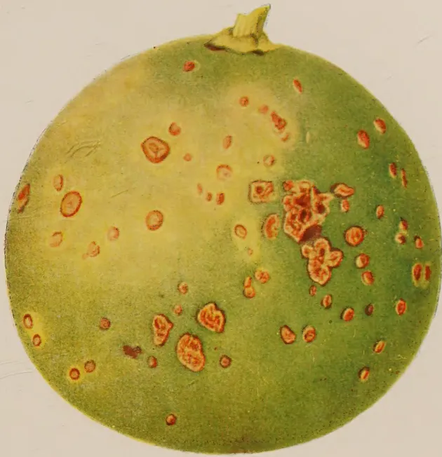
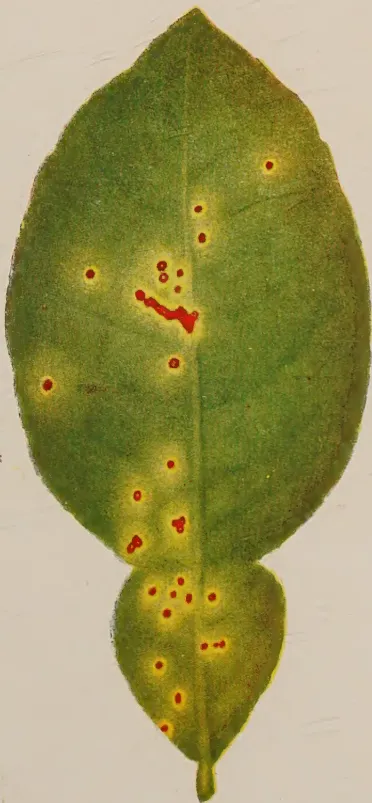
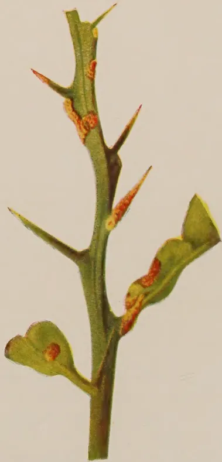

VOL. XC
PERADENIYA, MARCH, 1938
No. 3
| Page | |
|---|---|
| Editorial .. .. . | 125 |
| Citrus Canker and its Control. By M. Park, A.R.C.S. .. | 127 |
| Studies on Ceylon Soils—X. By A. W. R. Joachim, Ph.D., and D. G. Pandittesekere, Dip. Agric. (Poona) .. .. . | 136 |
| Preparation of Land, Transplanting, and After Cultivation of Cigarette Tobacco. By A. B. Attygalle .. .. . | 142 |
| Co-operative Egg Marketing in South India. By A. W. Kannangara .. | 146 |
| Soil Survey Work in Ceylon .. .. . | 149 |
| Agricultural Education at Peradeniya .. .. . | 153 |
| Soil Erosion .. .. . | 158 |
| The Cultivation of Pyrethrum in Japan .. .. . | 162 |
| Science and Practice of Agriculture in India .. .. . | 173 |
| Minutes of the Forty-first Meeting of the Rubber Research Board (Ceylon) .. .. . | 180 |
| Mother Earth .. .. . | 183 |
| Kandy Flora .. .. . | 185 |
| Animal Disease Return for the month ended February, 1938 .. | 186 |
| Meteorological Report for the month ended February, 1938 .. | 187 |
1—J. N. 1078 (3/38)
[Faint page: no legible print of its own could be verified; text withheld (stage 4 review list)]
March, 1938
“CITRUS Canker is one of the most serious diseases of citrus trees in Ceylon ” according to the Plant Pathologist whose interesting and instructive, but none the less depressing, article on the subject is published in this number. He gives very good reasons for regarding the eradication of the disease in Ceylon to be impracticable. It is true that the eradication campaigns launched by two countries at least, the United States of America and South Africa, achieved complete success. The method of attack was direct and simple. Every tree that was infected by the disease or was believed to have been exposed to such infection was completely destroyed by fire. In these two countries all the conditions were favourable to the successful prosecution of the campaign. The disease was discovered shortly after its introduction, and before it became established in the country, so that the affected area could be isolated and placed in quarantine; uncultivated members of the Rutaceae, the only natural order of plants which is known to serve as a host to this bacterium, were rare, and in any event the fugitive bacterium did not have the time to find harbourage in uncultivated areas; horticulture was on the scale of commercial orchards and therefore the organization of the campaign was not difficult; the population, unlike the peasants in tropical countries, were conversant with the principles of organized effort; finally, the wealth of these countries enabled large resources to be made available for the purpose. Not one of these conditions obtains in this country. The disease has been present in the Island for a long time; before the country became conscious of the danger, it had established itself very securely not only in the citrus trees that
126grow in a state of semi-cultivation in village gardens but also in the many species of citrus and other members of the Rutaceae family present in great abundance in the jungles throughout the Island; the population is apathetic; and the resources of the country are not large. In these circumstances campaigns such as were successfully carried out in America and South Africa are pre-doomed to failure in Ceylon.
About one half of the Plant Pathologist's article is devoted to a discussion of methods of control calculated to prevent the spread of the infection to individual orchards, or, if it cannot be kept out altogether, to modify the severity of the attack. While the author is to be commended for the thoroughness with which he has treated the subject, the predominant feeling that one experiences after reading the article is one of depression, of helplessness: the disease will be always with us: the orchardist can never rest with a sense of security; but the loss we suffer by the disease can be mitigated by measures which the peasant of this country is not likely to adopt.
These considerations apply equally to all other diseases and pests of plants: the Kalutara snail, oidium disease, the coffee berry borer, the leaf spot of betel, the tea tortrix, the bunchy top of plantains, and a host of other plagues will always be with us. One conclusion stands out: the eradication of most diseases and pests which become established is either impossible or economically impracticable. There is no short-cut to their control. The farmer can only hope to keep his bacterial and insect enemies at bay by the constant practice of laborious agricultural methods. But there is one aspect of the problem of pest control in which the state has to play the major part; the prevention of the introduction of new pests and diseases. Our experience with such insects as the Kalutara snail and diseases such as Pythium of ginger must convince us that the first line of defence must consist of the strictest quarantine regulations at the port of entry: and when the human element in the enforcement of regulations reduces their efficiency to something below 100 per cent., continual invigilation by the agricultural staff must discover the first appearance of an imported disease, and stamp it out before it becomes established.
127MALCOLM PARK, A.R.C.S.
PLANT PATHOLOGIST
CITRUS canker is one of the most serious diseases of citrus trees in Ceylon. Thought to have originated in China, it has been present in Ceylon for many years and it has been recorded from all parts of the Island. It does not occur in all citrus-growing countries. It is worthy of note that it was accidentally introduced in about 1908 into the United States of America, where the introduction was considered to constitute so grave a menace to the citrus-growing industry that state action was taken to stamp it out. The campaign was successful but cost about million dollars. Similar action was taken in South Africa where the disease was also accidentally introduced. Stringent regulations are now in force to prevent the introduction of the disease into countries where it does not occur.
The disease is most common in Ceylon at elevations below 3,000 feet, although it has been found at an elevation of over 5,000 feet. It is capable of surviving the drought periods experienced in the dry zone but, as will be discussed more fully below, it is usually more easy to keep in check in the dry zone than in the wet zone.
The disease has been recorded on almost all species of citrus but its seriousness varies considerably on the different species. There is also some indication that the resistance to the disease varies in different varieties of the same species. The species most susceptible to the disease in Ceylon are the grapefruit and the lime. The susceptibility of the former is important since there has been a marked extension in the cultivation of grapefruit in recent years; and the susceptibility of the latter is important in that isolated lime trees are present in a large proportion of the village gardens throughout the Island, most of them being attacked to a greater or lesser extent by the disease. Their presence is thought to have been responsible for the introduction of the disease into many orchards otherwise free. The species which are commonly used as stocks
128for budding, viz., sour orange, pummelo and rough lemon, are all susceptible especially in the seedling stage. Turning to the other end of the scale, the mandarin orange, the sweet orange, and the lemon are resistant to the disease. Canker spots do occur on these species but the spots are relatively few, even in highly infested areas, and the disease is therefore unimportant. The fruits of these species are rarely attacked.
The disease is most common and characteristic on leaves although it also occurs on fruits, young green twigs and occasionally on larger branches. The leaves are the first place where the appearance of the disease should be sought. On these it forms small roundish spots up to one quarter of an inch in diameter. The canker spot is readily recognizable by the naked eye, especially if the leaf is held up and the spot viewed with light coming through the leaf. Except in the earliest stages, the centre of the spot is light-brown in colour and can be felt as a rough raised outgrowth on both surfaces of the leaf. Immediately round the central raised area is an unbroken, narrow, darker oily-looking discoloured zone which in turn is surrounded by a broader, diffuse yellow area which appears as a halo round the spot. Plate 1 shows a cankered leaf of grapefruit as seen by transmitted light and also canker spots on grapefruit.
The spots occur on any part of the leaf and are usually round although two or more spots may coalesce to form an irregularly shaped diseased area. The disease is sometimes associated with the injury caused by the common leaf-mining caterpillar (Phyllocnistis citrella) and on some leaves the galleries of the insects are covered by numerous canker spots.
On the fruit the disease occurs as spots but the yellow halo is not so noticeable as on the leaves. The spots on fruits usually have a crater-like appearance and when the infection penetrates deeply an exudation of gum may occur. The value of fruits attacked by canker is reduced considerably and the disease is rendered more serious by the fact that fruit-rotting organisms which cannot attack healthy fruits frequently gain entrance through the canker spots and cause the fruits to decay.
The cankers on the green twigs have a similar appearance to those on the leaves and fruits. They may completely ring the twigs and so cause the die-back of shoots. New infections occur only on young developing tissue. Once leaves have attained their full size they become leathery and dark in colour and infections do not occur subsequent to this.

A detailed botanical illustration of a round citrus fruit, possibly a lemon or lime, with a green-yellow rind. The surface is covered with numerous small, reddish-brown, circular spots of varying sizes, some of which are clustered together. The fruit has a small, dried calyx at the top.
A botanical illustration of a single citrus leaf, which is ovate with a pointed tip and a small lobed base. The leaf is green and shows several small, reddish-brown spots, primarily located along the midrib and the lateral veins.
A botanical illustration of a short citrus branch with several sharp, pointed thorns. The branch has a few small, lobed leaves. Reddish-brown spots are visible on the stem and the undersides of the leaves, indicating a fungal or bacterial infection. This image shows a blank page with a light beige or cream-colored background. The surface has a subtle texture and contains several small, faint blemishes and smudges, particularly towards the top and right edges. There is no text or other content on the page. 129In young plants, especially in the nursery, the serious nature of the disease is obvious. Badly cankered leaves are shed and the assimilating surface of others is reduced while the canker spots often girdle stems to cause the partial or complete death of the plants. As plants grow older the seriousness of the disease is less obvious. It may cause the death of individual shoots by ringing the twigs and it causes a steady partial defoliation which may sap the vitality of the tree and lead to the incidence of chlorosis and to a general unthrifty appearance of the tree. Its presence on the fruits is perhaps the most important economic feature of the disease. The market value of cankered fruits is reduced and the canker spots may provide points of entry of secondary rotting organisms which would otherwise be unable to attack the fruits.
The disease has been proved to be caused by the bacterium Pseudomonas citri. The organism is not known to attack any plants outside the citrus family (Rutaceae). During periods of wet weather the bacterium, which is capable of free movement in water, is readily spread in rain drops, by splashing and moist soil on the feet and clothing of man, by animals, birds, &c., and by wind movements which bring diseased leaves into contact with healthy ones. It is also probable that the occurrence of heavy dew provides conditions which are conducive to the spread of, and infection by, the organism. Except in periods of dry weather all the citrus-growing districts in Ceylon below 3,000 feet provide conditions favourable for the development and spread of the disease. It is commonest where there is an even distribution of rain throughout the year.
The only known method of stamping out and preventing the spread of citrus canker is its eradication by the complete destruction of every tree on which the disease occurs. This method was adopted with success in the campaign, mentioned above, which was started in 1914 in Florida and the Gulf States of the United States of America. During that campaign nearly 4 million grove and nursery trees were destroyed at a cost of over 2½ million dollars.
130In Ceylon the disease has been recorded from most parts of the Island. As stated above, it occurs commonly on isolated lime trees grown in the home gardens of villagers. A campaign of eradication carried out on the same lines as those in the United States of America and in South Africa would therefore be an undertaking of considerable magnitude. It is questionable whether the citrus industry in Ceylon is ever likely to be of sufficient importance to warrant such a campaign. Further, there is the possibility of the disease being harboured on wild species of citrus and of other members of the Rutaceae present in the jungle. For example, Citrus hystrix (S. kudalu dehi) is found in the jungle in the wet and semi-dry zones and is susceptible to canker. A search for the presence of canker on these wild plants would be necessary if a campaign of eradication were undertaken.
Even if it is accepted that the complete eradication of citrus canker in Ceylon is economically impracticable, at least at the present time, there are indications that in certain circumstances the disease can be avoided altogether and that in others it can be controlled to such an extent that it is not likely to prove a serious menace to the growth of citrus. For the sake of convenience it is proposed to consider below the control of the disease in different sets of conditions.
Although citrus canker occurs in most parts of the Island, there are many districts, especially in the dry and semi-dry zones, in which large areas of land are available which may be termed disease-free. A prospective grower can, by a preliminary inspection of the neighbourhood, discover if there are any infected limes or other citrus trees in the immediate vicinity of the land it is proposed to open and can probably arrange for the destruction by fire of any such trees within, say, mile of his property. If this is done, planting can safely be undertaken. Stock for planting should be obtained either direct from countries where the disease does not occur, e.g., South Africa or Australia, or from nurseries in Ceylon which are free from the disease. If it is proposed to raise plants in nurseries, the seed for stocks should be obtained either from a disease-free source or through the Department of Agriculture, in which case seed which may be contaminated will be disinfected before issue. It might be mentioned here that, although seeds are not actually infected by the citrus canker organism, there is some evidence to show that seed from infected fruits may become contaminated, probably in the process of extraction and drying. Similarly, budwood should be obtained from a disease-free source.
131An orchard selected and planted in the manner prescribed will start free from citrus canker and will remain free from citrus canker unless infection is brought in from the outside. There are numerous orchards of this type in Ceylon and they demonstrate conclusively that the presence of citrus canker can be avoided if care is taken. There is, however, always the possibility of the chance infection of trees growing in a disease-free orchard. The organism may be carried on the person or clothing of a visitor or in other ways not at present clearly understood. The risk of infection is slight but it is real and a watch should always be kept for the appearance of the disease. If it does appear, the infected tree or trees should not be handled but should be burned in situ at once. The method used in Florida of burning diseased trees by means of petrol blow lamps is recommended. Other methods suggest themselves. The point to remember is that the disease is highly infectious, so that the trees should if possible not be touched, but should be burned as soon as possible. Once the disease has occurred, a regular inspection of the other trees will indicate if the outbreak has been stamped out.
Prevention is better than cure and to start with a disease-free orchard and to take steps to exclude infection is the sanest and, in the long run, the cheapest method of tackling the problem.
It is sometimes necessary, especially in the wet zone, to plant new orchards in areas in which, for various reasons, it is impossible to ensure freedom from infection. In thickly populated areas where many infected trees exist, it may be impossible to eradicate potential sources of infection in the vicinity of the land it is proposed to plant with citrus. In such areas it is advisable to foresee the grave risk of infection of the orchard and to be prepared for it. It is stated above that the different species of citrus vary considerably in this resistance to citrus canker. Of the economically important species, the mandarin orange and the good types of sweet orange, e.g., the Jaffa and the Valencia, are highly resistant to the disease while lemons are not seriously attacked. On the other hand, grapefruit and limes are extremely susceptible and citrus canker, if present, often proves to be the cause of serious monetary loss in orchards planted with them.
In opening orchards where there is any immediate likelihood of infection by citrus canker it is strongly recommended that only resistant species should be grown. By this means, the
132expense of attempting to control the disease on susceptible species is avoided and the presence of the disease can be disregarded.
The sections above deal with areas in which planting has not started and consideration must now be given to areas in which citrus groves have been established. If these groves are free no action is necessary other than the regular inspection of trees and the immediate destruction of newly introduced infections, as has been described above. There are, unfortunately, many areas in Ceylon already planted with grapefruit in which canker does occur to a greater or lesser extent and consideration must now be given to the control of the disease in these areas.
It will be convenient first to deal with young areas, i.e., areas in which the trees are not more than two or three years old. The heavy infection by citrus canker of such areas is often found to have been due to the use of infected planting material and this should serve as a warning to all prospective growers of the need for using disease-free plants or grafts in planting.
A grower owning a young orchard in which citrus canker is common would do well to consider the advisability of replacing all plants of species very susceptible to citrus canker, especially grapefruit, with the resistant species like mandarin orange, sweet orange, or lemon. This can be done either by replanting or by top-working the existing trees, i.e., by budding them with resistant species and cutting them back. By this, the grower will be saved the trouble and expense of attempting to control citrus canker on his susceptible plants which in the wet zone is not likely to be completely successful.
Citrus canker causes severe damage to young citrus and it is when the trees are at this stage that the need for some form of control is most obvious. Severely infected leaves fall and the cankers often ring the green twigs resulting in the die-back of shoots or branches. Badly affected trees develop slowly and are often unthrifty in appearance. They may attempt to bear fruit earlier than they would normally but the fruit rarely matures and the additional strain further weakens the trees, which often become subject to various forms of chlorosis.
It is stated above that citrus canker may be spread from tree to tree by splashing of rain or dew, which are carried by the wind and also by the whipping of leaves in the wind which brings diseased and healthy leaves into contact, and which
133often causes abrasions which provide easy points of entry for the organism. Any steps which can be taken to reduce the effect of the wind will therefore be beneficial and it has been found here and in Japan that the planting of windbreaks is a valuable aid in the control of canker. In Ceylon, gliricidias planted in every other row at right angles to the prevailing winds make satisfactory windbreaks, besides providing material useful for mulching the trees in the dry weather. In Japan loquats (Eriobotrya japonica Lindl.) have been found to make useful windbreaks. The first step in the control of the disease therefore should be the planting of windbreaks at right angles to the prevailing winds, which in Ceylon are usually north-east and south-west.
The next step in the control of canker in young trees is eradication by handpicking. Every leaf showing signs of canker spots should be picked and burned. The leaves so gathered should be placed in bags, carried by the pickers, and burned carefully at some convenient place. Where canker lesions are seen on young twigs they should either be excised carefully with a sharp knife or, if they are extensive, the twigs should be pruned off below the disease. It is possible that, in a heavily infested orchard the first picking will be drastic. If this is likely to be so, the trees should be manured before the picking starts so that they will be stimulated to produce new growth shortly after. This campaign of eradication will not be successful unless it is thorough and it will be found to be necessary to institute regular rounds of picking. In a heavily infested orchard the first few pickings should be undertaken at intervals of about two weeks, after which the intervals between pickings should be lengthened, the intervals being determined by the rate at which the disease appears.
While no fungicidal spray has yet been tested which gives perfect control of citrus canker, it has been found that, with young trees, regular spraying combined with the handpickings described above does reduce the incidence of canker to such a low level that it becomes unimportant. That spraying alone does not give better results is due to the fact that the citrus canker bacterium attacks young developing tissue. The function of a fungicidal spray is to deposit a thin layer of poisonous material on the surface of the plant so that any parasitic organisms deposited thereon will be killed. Young developing tissue, e.g., young leaves, expands rapidly and, however carefully the plants may be sprayed, the fungicidal film soon becomes broken and ineffective as a result of the growth and expansion of the sprayed surface. Spraying, to be most effective, must therefore be done at regular and frequent intervals, special attention being given to the young developing
134leaves. Once the leaves expand fully, they mature and become leathery. If they are uninfected at this stage, they usually remain free from infection for the whole of their life.
Another point is worthy of note before details of sprays are discussed. The occurrence of citrus canker on the leaves is commonly found to be associated with the galleries of the common leaf-mining caterpillar (Phyllocnistis citrella). Whether the bacteria are carried in or on the body of the insect or whether they find the galleries convenient points of entry into the leaf has not been determined. Whatever the cause, the galleries are often covered by citrus canker spots and it has been found that by controlling the leaf-miner attack, the incidence of citrus canker is reduced.
In spraying for the control of citrus canker in young plants, the spray should therefore consist of a combined insecticide and fungicide. Of the insecticides, nicotine sulphate at the rate of to oz. per gallon of spray has been found to be most effective in controlling leaf-miner. Of the fungicides tested, a proprietary brand of colloidal sulphur and lime-sulphur solution have both been found to be effective. Further details can be obtained from the writer.
The combined spray should be applied at least once in two weeks. When trees are young, growth proceeds the whole time and there are no definite flushing seasons so that spraying must be carried on continually through the year, except in very dry weather. The type of sprayer to be used will depend on the size of the orchard but all sprayers should be fitted with nozzles giving a fine mist of spray.
To summarize, the control of citrus canker in young orchards consists of the planting of windbreaks, the regular picking and burning of diseased leaves, and the regular spraying of the young developing foliage. If the disease is severe, a high standard of cultivation and manuring should be maintained to make up for the loss of plant tissue. These measures are laborious and expensive and consideration should be given to the question of replacing susceptible species, like grapefruit, with more resistant species by replanting or top-working.
In old orchards in which citrus canker is common, the control of the disease provides a difficult problem. The removal of badly infected susceptible trees and replacing them with resistant species should again be considered, but here the loss involved will be greater than in young orchards and it is doubtful if it is advisable economically except, possibly, in cases of very severe infection. The planting of windbreaks is recommended for reasons stated above.
135Methods of direct control, e.g., eradication and spraying, will vary with the climate in which the trees are growing. In the dry zone where the trees, and incidentally the disease, are in a more or less dormant state during the dry season, direct control measures can be undertaken with success. Towards the end of the dry season the trees should be stripped of all diseased leaves and shoots, which should be burned. Subsequently, the new flush of foliage, which develops with the rain, should be sprayed two or three times at intervals of one week, until the leaves have passed through the susceptible stage. Direct treatment should then cease until the following season.
In orchards situated in the wet zone there is no marked resting season and the period of new growth is not well-defined so that treatment at any one time of the year is not possible. The cost of regular treatment throughout the year is prohibitive and experiments carried out at Peradeniya have shown that such continuous treatment is of little value, the practical difficulties being so great that good control is not obtained. Methods of eradication by picking and spraying are therefore not recommended for old orchards in the wet zone.
The immediately important economic feature of the disease in old orchards is the attack on the fruits, which results in a reduction in their market value and a loss of profit. If this can be prevented the presence of canker becomes less important since the damage to foliage can be counter-balanced by a raising of the standard of cultivation by manuring, &c. Small experiments have indicated that, with certain trees, the bagging of the fruits immediately after they have set protects them to a great extent from infection. The bags used were made of ordinary grease-paper with the corners removed to prevent the accumulation of rain water in them. In the first instance one bag was used for a whole inflorescence and as the fruits developed more bags were used, as required. Periodical inspections are necessary and torn or damaged bags should be replaced. Once the fruits have grown to their full size, they cease to be susceptible to the disease but in areas where fruit-fly occurs the bags should be retained until maturity since they are effective in preventing fruit-fly attack. Bagging against citrus canker has not been tried on a large scale so that details of costs are not available.
Even if the fruits can be protected by bagging, the other damage caused by the disease is still important. The steady partial defoliation of the trees eventually reduces their vigour. It is therefore suggested that regular manuring should be undertaken and a high standard of cultivation maintained in order to make good the damage caused by the disease in those areas where direct control measures are not practicable.
136A. W. R. JOACHIM, Ph.D., Dip. Agric. (Cantab.)
CHEMIST
AND
D. G. PANDITTESEKERE, Dip. Agric. (Poona)
ASSISTANT IN AGRICULTURAL CHEMISTRY
IN previous contributions to this journal (1, 2) some of the more important soil groups and series of the dry zone have been described and their distribution generally indicated. In this article the profile and analytical characteristics of further dry zone soils are recorded. With the exception perhaps of two or three soil series of comparatively rare occurrence and the various types of paddy soils which are now receiving attention, the general study of the cultivated dry zone soils may be considered to be almost complete for practical purposes. The soils under reference are the grey brown loams of the Tissamaharama area, the red and reddish brown earths and loams of such extensive occurrence in the dry zone, profiles of which have been studied at Habarana on the Trincomalee road and Alampil in the Mullaitivu district, and a typical alluvial loam from the Ridibendi-ela scheme between Maho and Nikaweratiya. The usual analytical determinations were made by standard methods except in regard to carbon, for which the rapid permanganate method was adopted (3). The analytical data are presented in the table and the profile characteristics described separately under each soil class.
137| Location | .. | Tissamaharama Experiment Station |
| Elevation | .. | 75 ft. above sea level |
| Climate | .. | Rainfall: 42 in. (approx.); temperature: 81°F |
| Geological origin | .. | Recent |
| Mode of formation | .. | Sedimentary, alluvial |
| Topographic position | .. | Low-lying, flat |
| Drainage | .. | Good |
| Vegetation | .. | Fruit—Citrus spp. and cotton |
| A. 0-4 ft. | .. | Uniform grey brown loam, colour becoming somewhat lighter with depth; pieces of pottery interspersed at lower depths; columnar; fairly hard but friable; compact; slightly alkaline; root growth good |
The brown Tissamaharama soils, which have the reputation of being very fertile, are fairly deep medium loams of uniform texture, equally suited for annual arable crops, fruit or paddy. Where irrigation facilities are available, excellent crops of paddy are grown. The soil is obviously an alluvial deposit, and has a high percentage of fine sand which renders it easily cultivated and drained. The organic matter and nitrogen contents of the particular soil profile studied are low, due no doubt to losses through cultivation. In reaction the soil is faintly alkaline with a pH of 7.6, its exchangeable base content being very high and similar to that of the Jaffna soils. Calcium constitutes about 80 per cent. of the total bases. It is equally rich in total mineral constituents, particularly lime and potash. Phosphoric acid occurs in fair quantity. The soil, as may be expected, is non-lateritic in nature. With its good reserves of mineral constituents and its good physical texture, this soil may be rightly considered one of the most fertile in that part of the dry zone of Ceylon; but manuring with bulky organics and green manure, and where necessary, with artificial nitrogenous fertilizers, is clearly indicated if high crop yields are to be maintained. The soil though very different from the Hambantota (2) soil in colour is very similar to the latter in chemical characteristics and, like it, has been affected, to some degree at any rate, by crystalline limestone. The different colour is due to its topographic position and the fact that it is mainly an alluvial deposit.
138REDDISH BROWN LOAM
| Location | .. | Near Habarana, 53 miles from Kandy |
| Elevation | .. | Slightly above sea level |
| Climate | .. | Rainfall: (approx.) 68 in.; temperature: 81°F |
| Geological origin | .. | Biotite gneiss overlain by crystalline limestone |
| Mode of formation | .. | Residual |
| Topographic position | .. | Gently undulating to flat |
| Drainage | .. | Very good |
| Vegetation | .. | High forest |
PROFILE
| A. | 0-13 in. | .. | Reddish brown loam; irregular clod; hard but friable; fairly compact; roots abundant; acid; horizon boundary distinct |
| C1. | 13 in.-48 in. | .. | Reddish gravelly loam with abundance of limestone ferruginous and quartz gravel; conglomerate; soil hard but fairly friable; alkaline; root growth poor |
| C2. | > 4 ft. | .. | Decomposing rock brash of yellow brown colour; banding clearly discernible; fragments of limestone present; alkaline |
The analytical data of the red lateritic loam at Habarana indicate that the A horizon is a medium loam containing a small proportion of gravel. The C1 horizon however contains a high proportion of quartz and ferruginous gravel and fragments of crystalline limestone which occasionally outcrops along this road. A gravelly sub-soil layer is characteristic of many of these dry zone soils. The C2 horizon is a sand, consisting largely of rock brash. The organic matter and nitrogen contents of the A horizon are fair and for dry zone soils, distinctly good. The carbon/nitrogen ratio is 12.2. The C horizons and particularly the C2 horizon are poor in both constituents. In reaction the A horizon is acid, but the C horizons, due to the fragmentary limestone, are distinctly alkaline. Free lime as calcium carbonate amounts to 1.8 per cent. in the C1 horizon and 0.8 per cent. in the C2 horizon. All three horizons are rich in potash and lime but poor in phosphoric acid. As would be expected from the presence of limestone, all the horizons, particularly the C1 and C2, are very rich in replaceable bases, especially calcium. The A horizon is slightly lateritic in nature, but the C horizon is almost non-lateritic due to the influence of the limestone. This soil shows a close resemblance in morphological and chemical characteristics to the chocolate red loam of Vavuniya (1), and for practical purposes both may be considered to belong to the same soil series. Good for fruit, the soils will also be well suited for crops like cotton, chillies, and even paddy, though for the latter crop, a good supply of irrigation water would be necessary owing to rapid water percolation.
139RED LATERITIC EARTH, MULLAITTIVU| Location | .. | Alampil via Mullaittivu |
| Elevation | .. | About 20 ft. above sea level |
| Climate | .. | Rainfall : 60 in. (approx.); temperature : 81°F |
| Geological origin | .. | Probably Pleistocene plateau deposits overlying gneiss |
| Mode of formation | .. | Transported, aeolian ; possibly residual |
| Topographic position | .. | Flat |
| Drainage | .. | Good |
| Vegetation | .. | Medium to low forest ; coconuts (cultivated) |
| A. 0-6 ft. | .. | Uniform, brownish red loam slightly darker near surface ; irregular columnar to prismatic ; hard but friable ; compact ; slightly acid ; root growth good |
| C. > 6 ft. | .. | Decomposing lateritic rock |
The brownish red soil from Alampil is a deep, uniform loam, of poor organic matter and nitrogen content. Its carbon/nitrogen ratio is 10.3. In reaction it is slightly acid, with a pH of 6.7. Its potash content is fair, but it is poor in phosphoric acid and lime. When compared with the other soils dealt with in this article the exchangeable base content is low, but higher than that of the wet zone soils. It is lateritic in nature, with a silica/alumina ratio of 1.66. The general indications of the geology of the area, the depth, lateritic nature, and poor organic and mineral nutrient content of the soil strongly suggest that the soil is a typical wind-borne Pleistocene red earth from the hills, to which the geologist Wayland refers in his paper on the Stone Ages of Ceylon (4). On the other hand it is not dissimilar to the dry zone lateritic red loam, but lacks the quartz and limestone gravel content of the latter. From the practical standpoint, however, it is immaterial how the soil is classified. With cultivation and manuring, particularly with bulky organics and nitrogenous fertilizers, the soil should be suitable for rotation crops and certain fruit crops, e.g., coconuts, and where irrigation is possible, for fruits like citrus and per paddy.'
ALLUVIAL LIGHT LOAM| Location | .. | Ridibendi-ela Scheme, near Maho |
| Elevation | .. | Slightly above sea level |
| Climate | .. | Rainfall : 58 in. (approx.); temperature : 81°F |
| Geological origin | .. | Recent |
| Mode of formation | .. | Sedimentary ; alluvial |
| Topographic position | .. | Slightly undulating ; sample from fairly high river bank |
| Drainage | .. | Very good |
| Vegetation | .. | Low and high jungle |
A. 0 — > 4 ft. .. Uniform brownish grey sandy loam ; irregular clod to columnar ; hard but friable ; compact ; neutral ; root growth good
This soil is a deep, sandy loam with a high fine sand and fair clay content. It is poor in organic matter, nitrogen and phosphoric acid, has a good reserve of potash, and is rich in lime. Its exchangeable base content is high, calcium predominating. In reaction the soil is almost neutral. On the basis of the silica/alumina ratio of its clay fraction, the soil is non-lateritic. In this and other respects it bears a close similarity to the Tissamaharama soil, indicating thereby a similar mode of formation. Fruit and rotation crops can be grown successfully on soils of this type, provided that organic matter and nitrogen are well supplied. Though somewhat light for paddy, good yields could be expected if the soil is manured with bulky organics and green manure.
SUMMARYIn this article the profile and analytical characteristics of four typical soils of the dry zone—the grey brown loam of the Tissamaharama district, an alluvial loam from the Ridibendi-ela Scheme, a reddish brown loam from Habarana, and a lateritic red earth from Mullaittivu—have been described and compared, and their suitability for crops discussed. The Tissamaharama soil is very similar to the alluvial loam from Ridibendi-ela and has points of similarity, except for colour, with the neighbouring Hambantota soil. The Habarana soil shows the influence of crystalline limestone and is closely allied to the Vavuniya soil. The Mullaittivu loam is very probably a Pleistocene red earth, but is not very dissimilar to the dry zone lateritic loam.
REFERENCES| Location | Tissa- maharama |
Habarana | Mullait- tivu |
Ridibendi- ela Scheme |
|||
|---|---|---|---|---|---|---|---|
| A | C1 | C2 | A | A | |||
| Per cent. | Per cent. | Per cent. | Per cent. | Per cent. | Per cent. | Per cent. | |
| Stones and gravel | .. — | .. 4.8 | .. 67.0 | .. 4.0 | .. — | .. — | .. — |
| Coarse sand | .. 11.2 | .. 40.5 | .. 41.6 | .. 61.5 | .. 44.1 | .. 7.4 | .. 61.7 |
| Fine sand | .. 53.0 | .. 20.4 | .. 20.0 | .. 19.1 | .. 25.9 | .. 9.2 | .. 18.2 |
| Silt | .. 8.4 | .. 4.4 | .. 3.3 | .. 5.9 | .. 3.2 | .. 0.8 | .. 2.7 |
| Clay | .. 23.4 | .. 29.4 | .. 29.7 | .. 10.8 | .. 25.0 | .. 17.8 | .. 17.8 |
| Loss by solution | .. 1.1 | .. 1.3 | .. 1.7 | .. 1.0 | .. 0.6 | .. 0.8 | .. 0.8 |
| Moisture | .. 2.9 | .. 4.0 | .. 3.7 | .. 1.7 | .. 1.2 | .. 2.7 | .. 2.7 |
| Texture index number | .. 22.3 | .. 27.1 | .. 27.2 | .. 10.5 | .. 23.0 | .. 17.8 | .. 17.8 |
| Soil type | .. Loam | .. Loam | .. Gravelly loam |
.. Sand | .. Loam | .. Sandy loam |
.. Sandy loam |
| Loss on ignition | .. 4.56 | .. 6.39 | .. 8.34 | .. 3.58 | .. 4.80 | .. 3.12 |
| Organic matter | .. 1.29 | .. 2.45 | .. 0.90 | .. 0.15 | .. 1.30 | .. 0.99 |
| Combined water | .. 3.27 | .. 3.94 | .. 7.44 | .. 3.43 | .. 3.50 | .. 2.13 |
| Carbon | .. 0.75 | .. 1.42 | .. 0.52 | .. 0.09 | .. 0.75 | .. 0.57 |
| Nitrogen | .. 0.076 | .. 0.116 | .. 0.048 | .. 0.021 | .. 0.073 | .. 0.067 |
| Carbon/nitrogen ratio | .. 9.9 | .. 12.2 | .. 10.8 | .. 4.1 | .. 10.3 | .. 8.6 |
| Calcium carbonate | .. — | .. 0.27 | .. 1.89 | .. 0.83 | .. — | .. — |
| Reaction (pH) | .. 7.6 | .. 6.4 | .. 8.4 | .. 8.4 | .. 6.7 | .. 6.9 |
| Total lime | .. 0.548 | .. 0.266 | .. 2.496 | .. 0.842 | .. 0.118 | .. 0.665 |
| Total potash | .. 0.434 | .. 0.364 | .. 0.281 | .. 0.408 | .. — | .. 0.139 |
| Total phosphoric acid | .. 0.103 | .. 0.034 | .. 0.039 | .. 0.033 | .. 0.035 | .. 0.053 |
| Total exchangeable bases (m.e. per 100 gm. soil) |
.. 15.31 | .. 14.88 | .. 52.08 | .. 25.93 | .. 5.96 | .. 13.31 |
| Exchangeable calcium | .. 12.17 | .. 10.11 | .. 50.98 | .. 25.31 | .. 5.06 | .. 11.63 |
| Loss on ignition | .. 7.11 | .. 15.13 | .. 18.22 | .. 8.10 | .. 6.24 |
| Silica (SiO2) | .. 40.88 | .. 34.72 | .. 32.97 | .. 40.20 | .. 43.15 |
| Sesquioxides (R2O3) | .. 48.70 | .. 50.80 | .. 46.63 | .. 49.22 | .. 49.99 |
| Alumina (Al2O3) | .. 33.99 | .. 32.30 | .. 28.73 | .. 41.03 | .. 31.07 |
| Iron oxides (Fe2O3) | .. 14.71 | .. 18.50 | .. 17.90 | .. 8.03 | .. 18.92 |
| SiO2/Al2O3 (molecular) | .. 2.03 | .. 1.82 | .. 1.95 | .. 1.66 | .. 2.35 |
| SiO2/R2O3 (molecular) | .. 1.60 | .. 1.33 | .. 1.39 | .. 1.47 | .. 1.69 |
| Soil nature | .. Non- lateritic |
.. Lateritic | .. Non- lateritic |
.. Lateritic | .. Non- lateritic |
BY
A. B. ATTYGALLE
MANAGER, EXPERIMENT STATION, WARIYAPOLA
IT is essential that the tobacco plant should grow vigorously without disturbance after it is transplanted. To achieve this object, the land which is to carry a crop of tobacco should be fertilized and well prepared. The land should be ploughed, cross-ploughed and disc-harrowed, allowing a sufficient interval between the successive operations for the decomposition of green matter ploughed in and for the proper aeration and weathering of the soil. The first ploughing should not be done when the soil is very wet or very dry. The interval between the operations will depend on climatic conditions. The land should be kept free of weeds by occasional harrowings.
Before transplanting, the land should be well levelled and drained. Levelling is best done by using the diamond mesh harrow. The number and the depth of drains will depend on rainfall, but normally drains 1 foot deep and 2 feet wide should be opened on all four sides of every quarter of an acre. After draining, the planting positions are marked out, 3 feet by 3 feet, by means of a hand marker*. One acre of land will carry 4,840 plants. The following fertilizer mixture is used with advantage at Wariyapola Experiment Station :—
| 84 lb. Nitrate of Soda | } per acre |
| 140 lb. Sulphate of Potash | |
| 224 lb. Superphosphate |
The fertilizers should be mixed just before application. The mixture should be applied in two doses. The first dose should be applied about two or three days before transplanting at the places where the plants are to be put in and the fertilizers well mixed with the soil. The second dose should be applied about four weeks after transplanting; the fertilizers should then be applied round the plants and forked into the soil lightly.
* Described by C. R. Karunaratne, Dip. Agric. (Poona), in "Agricultural Implements—IV.", The Tropical Agriculturist, Vol. LXXXVIII., No. 3, March, 1937
143The seedlings are ready for planting out in the field when they are six to eight weeks old at which stage they should be four to six inches high. The seed beds should be thoroughly soaked before pulling out the plants. Transplanting should be done during cloudy days as less evaporation and consequently less wilting take place under such conditions and the plants will recover more quickly. The most favourable time for transplanting has been found to be during the cool hours of the morning and evening. Select only the stout and healthy seedlings and pull up only sufficient for transplanting in one morning or evening. The seedlings should be sent to the field in baskets.
Make a hole with a short pointed peg or with the forefinger of the hand, put the plant in, taking care to cover all the roots, press down the soil round the plant, water liberally and cover with coconut husks. See that the plants are put in properly, and the roots are firmly packed in the soil. Tobacco plants should be completely shaded for three days, and if there is no rain they should be watered daily, preferably in the evenings. On the fourth day the husks may be separated about two or three inches and so expose the plants to sunshine gradually. Remove the husks entirely when the plants are two weeks old. The vacancies should be supplied within a week in order to get the uniform stand of crop which is so desirable for flue-curing tobacco. If there is no rain, watering should be continued. When the plants have been in the field for about four weeks watering should be done once in two or three days. As the plants grow older watering may be reduced. If plants show any signs of wilting they should be liberally watered.
About two weeks after transplanting, the plants become well established and cultivation should begin at this time. Tobacco requires a fine, loose, well-drained soil and, if good yields are looked for, cultivation after transplanting is essential. This operation will also destroy the annual weeds which may spring up with the rains. The first cultivation should be deep, but it should not be too close to the rows as there is a danger of disturbing the young plants. This operation will break up the superficial crust on the soil. Subsequent cultivations should be more shallow as the plants develop, because deep cultivation will cause damage by cutting off many of the small roots. The number and frequency of cultivations will depend on soil and
144climate. Cultivation should cease when the leaves spread sufficiently between the rows to obstruct the free passage of the cultivator or the labourer.
Backward and more anaemic plants may be given a dose of nitrate of soda as a top dressing at the rate of 100 lb. per acre.
When the plants are twelve inches high, all the sand leaves are removed. Sand leaves are of no value and their removal induces the more rapid growth of the plant by allowing a free circulation of air at the base of the plant. This operation may also check the spread of the frog-eye in the field. A second priming should be done just before topping. The sand leaves should be destroyed by burning.
Topping is the name given to the operation by which the terminal bud is removed. The proper stage for doing this, and where to do it are points requiring careful judgment and experience. The height at which a plant is topped has an important bearing on the quality of the leaf and it is advisable to top slightly higher for flue-curing than for air-curing. The height at which a plant should be topped naturally depends on the growth of the plant and its development of leaves. A robust plant will carry more leaves than a smaller one. A well-developed plant should carry about sixteen to eighteen leaves. If the plant grows coarse and rank, do not top at all or, if the growth is coarse but not very coarse, topping may be done, but suckering should not be carried out. Topping should be done while the stem of the plant is still soft and juicy and should never be delayed till the flower heads develop. Topping may have to be done several times on the same field as all the plants do not develop their flower heads at the same time.
Suckering is the removal of young shoots which appear in the axils of the leaves after topping. About ten days after topping suckers will appear in the axils of the leaves and it is essential that these be removed as soon as possible as they drain the food store from the older leaves, leaving them thin and papery. A tobacco crop for flue-curing has to be suckered
145about two to three times before harvest. If, on the other hand, a period of wet weather comes at the harvest time the suckers may be allowed to grow temporarily.
Both quality and yield of cigarette tobacco are greatly influenced by climatic conditions. For producing the best quality of cigarette tobacco rainfall should be moderate. The rain should be well distributed throughout the growing period of the crop, there should be light showers during the ripening and the harvesting period. There should also be plenty of sunshine during the growing period. Cigarette tobacco of the best quality can only be produced in seasons of normal rainfall and temperature.
Tobacco can be grown on any soil, provided it is well-drained and the climatic conditions are favourable, but for profitable cigarette-tobacco-growing the right type of soil must be selected. The ideal soils for growing cigarette tobacco are light, infertile sandy loams.
| Description | Labour | Cost. | No. of Units | |||
|---|---|---|---|---|---|---|
| Men | Women | Boys | Rs. | c. | ||
| 1. Preparation of nursery, &c. .. | 10 .. — .. | — .. | — .. | 5 32 .. | 10½ | |
| 2. Ploughing and harrowing .. | 4½ .. — .. | — .. | — .. | 2 94 .. | 4½ | |
| 3. Levelling and draining .. | 7 .. — .. | ½ .. | 3 .. | 4 93 .. | 10½ | |
| 4. Marking and pegging .. | 3 .. — .. | — .. | 3½ .. | 2 92 .. | 6½ | |
| 5. Shading .. | 3½ .. — .. | 1 .. | 4½ .. | 3 87 .. | 9 | |
| 6. Transplanting and supplying vacancies .. | 7½ .. — .. | — .. | 11 .. | 8 22 .. | 18½ | |
| 7. Watering .. | 11½ .. — .. | — .. | 4 .. | 7 46 .. | 15½ | |
| 8. Weeding .. | 6 .. — .. | 11½ .. | 6½ .. | 8 96 .. | 24 | |
| 9. Cost of fertilizers, manuring and cultivation .. | 20½ .. — .. | — .. | 14 .. | 15 88 .. | 34½ | |
| 10. Pest and disease works .. | 7 .. — .. | — .. | 19 .. | 11 01 .. | 26 | |
| 11. Priming, topping and suckering .. | 5 .. — .. | — .. | 4 .. | 4 10 .. | 9 | |
| 12. Harvesting and curing .. | 22½ .. — .. | 1 .. | 6½ .. | 14 18 .. | 30 | |
| 13. Grading .. | 5 .. — .. | ½ .. | ½ .. | 2 78 .. | 6 | |
| 14. Tying tobacco into hands and bulking .. | 4 .. — .. | — .. | ½ .. | 2 10 .. | 4½ | |
| 15. Uprooting of tobacco stumps .. | 6 .. — .. | — .. | — .. | 3 0 .. | 6 | |
| Total .. | 123 | 14½ | 77½ | 97 67 | 215 | |
A. W. KANNANGARA
ASSISTANT TO AGRICULTURAL OFFICER, PROPAGANDA
WITH the object of developing poultry-keeping as a cottage industry, the rural leaders of the Y. M. C. A., Martandam, South India, introduced pure bred fowls in the neighbouring villages in the year 1924. They combined their work with intensive propaganda until a large proportion of the peasants began to rear improved breeds. Consequently, the Y. M. C. A., was confronted with the problem of marketing their eggs. With this object in view, a co-operative society was formed in 1924. It had a membership of 12 at the beginning, and was registered five years later.
From 1929 to December 1935, the Y. M. C. A. successfully managed this society. At the beginning of 1936, the members of the society showed an inclination to take over the management themselves. Realizing that such a change would make members more self-reliant, the Y. M. C. A. gladly responded to their request and handed over the entire business to the society including a reserve working capital of Rs. 504.13.0. This amount formed the basis of the business capital of the newly formed society.
A building near the main road and in close proximity to the Y. M. C. A. was rented as the society's office. The marketing operations are carried on here on Mondays and Thursdays. A business manager, a clerk, and a peon are employed on monthly
147salaries to conduct the routine work of the society. A business committee of five members and a managing committee of seven attend to the business aspect and the propaganda side, respectively, of the society.
Eggs are bought from members and non-members. Members get a bonus at the end of the year; non-members are given only the price of the eggs they supply. Each member is entitled to borrow a sum of Rs. 25 from the society for which interest is charged at the rate of 8 per cent. per annum. Loans are given only for the improvement of poultry and for the purchase of equipment. Generally, the expenses incurred on such improvements do not exceed Rs. 10, and as far as possible the society gives loans of only Rs. 10 to each member. This loan is repaid from the sale of eggs, at the rate of Re. 1 per mensem.
The value of shares each member can buy does not exceed Rs. 5. For the convenience of the members this amount is collected in 20 instalments of annas 4 each. Interest received on share money varies from 6 to 9 per cent. A system of thrift has also been introduced, by which every member is expected to deposit with the society one-half anna from each rupee he gets from the sale of eggs. This amount is paid back to the members at the end of the year.
Non-members who bring eggs are mostly school children. They are encouraged to keep one or two hens for themselves, and get monthly payment for the eggs they supply. This money has to be utilized for their clothing and school fees. They are thus helped to support themselves even when they are very young. If such a child wishes to become a member of the society, an elder member of the family is admitted into membership, and the child continues to bring the eggs as before.
Only two grades of eggs are taken and marketed. Eggs weighing oz. and over are graded as A, and those between and oz. as B. This restriction has made the people rear only those birds which lay heavy eggs. Each egg is carefully tested in water, wrapped in attractive tissue paper, packed in bamboo baskets and sent by train to various customers in different parts of South India. To some customers in the Travancore State, where convenient traffic arrangements are not available, they are sent by post.
The baskets required for packing the eggs are made by some very poor families among whom basket-making has become a subsidiary cottage industry. On an average they receive Rs. 250 annually by the sale of baskets.
148The progress of the society since 1929 and the distribution of proceeds are worthy of attention.
| Year | No. of Members | Shares taken | Eggs taken | Business for the year | Amount paid to the Villagers | ||||
|---|---|---|---|---|---|---|---|---|---|
| Rs. | as. | p. | Rs. | as. | p. | ||||
| 1929 .. | 12 .. | 27 .. | 1,000 .. | 100 | 0 | 0 .. | 59 | 3 | 3 |
| 1930 .. | 21 .. | 51 .. | 39,089 .. | 3,893 | 12 | 1 .. | 2,057 | 5 | 2 |
| 1931 .. | 43 .. | 63 .. | 67,880 .. | 5,051 | 13 | 8 .. | 3,572 | 10 | 0 |
| 1932 .. | 54 .. | 74 .. | 76,748 .. | 4,872 | 2 | 0 .. | 3,366 | 2 | 3 |
| 1933 .. | 57 .. | 77 .. | 86,483 .. | 6,066 | 13 | .. | 3,793 | 1 | 10 |
| 1934 .. | 71 .. | 98 .. | 97,084 .. | 6,752 | 14 | 7 .. | 4,258 | 1 | 2 |
| 1935 .. | 78 .. | 106 .. | 106,782 .. | 7,073 | 0 | 0 .. | 4,683 | 6 | 9 |
| 1936 .. | 141 .. | 176 .. | 108,378 .. | 7,432 | 9 | 0 .. | 4,753 | 6 | 9 |
| Total .. | 141 | 176 | 583,444 | 41,243 | 0 | 5 | 26,543 | 5 | 2 |
The proceeds of 1936 were distributed as follows :—
| Per Cent. | |
|---|---|
| 1. To the producers .. .. | .. 54 |
| 2. Postage transport charges .. .. | .. 21 |
| 3. Printing, packing .. .. | .. 10 |
| 4. Salaries and Establishment .. .. | .. 9 |
| 5. Profit .. .. | .. 5 |
| 6. Miscellaneous .. .. | .. 1 |
The writer's thanks are due to the Business Manager of the Martandam Co-operative Society who was good enough to place the books of the society at his disposal.
149A. W. R. JOACHIM, Ph.D., Dip. Agric. (Cantab.)
CHEMIST
DURING the past few years considerable attention has been given to the study and survey of the soils of the Island in general and of certain areas in particular. In a previous broadcast talk entitled 'Soils of Ceylon' the results of the general study were outlined. On this occasion the second type of soil survey work, viz., that connected with agricultural development schemes will be discussed.
The policy that soil surveys of proposed land schemes should precede ordinary surveys was first formulated at a conference on survey and settlement in June, 1935. It was the sequel to a preliminary soil survey of the Minneriya scheme which revealed that fairly extensive areas were not altogether adapted for the cultivation of paddy. Subsequent work of this nature has amply demonstrated the wisdom of such a policy. When it is considered that considerable sums of money are expended on the development of these schemes, more particularly of irrigation schemes, that large numbers of individuals place all their hopes for the future on the fertility and productivity of their allotted share of land, and that Government itself would desire nothing better than the establishment of a contented and prosperous peasantry, it will be fully realized how important it is that the greatest circumspection should be adopted in the selection and allotment of areas for colonization. Hence the need for soil surveys. The hopes of the country are centred on the success of land schemes that Government has already initiated or proposes to initiate. Soil survey work is therefore of a nation-building character, for
* The text of a broadcast talk given from the Colombo Broadcasting Studio on the 12th January, 1938
150apart from its contribution towards the achievement of the desired objectives, it is the only means by which the potential soil wealth of the country can be assessed.
The work however is one which calls for sound technical knowledge and great care, and a practical outlook which only familiarity with field conditions can give. Often, it is attended with the greatest difficulty. The large irrigation schemes in respect of which soil surveys are required are generally situated in most inaccessible areas, at present under thick forest or jungle. As the objects of a survey are first to determine the suitability of an area, in part or whole, for agricultural development, and secondly to indicate on a map, in respect of crop suitability, the rough distribution of the soil types it comprises, it will be obvious that a fairly intensive exploration of the area is necessary if the survey is to serve its purpose. The work therefore entails long and tedious walks through wild animal-infested, mosquito and tick-ridden jungle, thorny scrub, chena and damana, wading across streams or rivulets, camping under difficulties and other disabilities unnecessary to mention. In the survey of one of these large schemes ten to twelve miles a day, on the average, are covered by foot under these trying conditions, and, at a conservative estimate, from four to five hundred miles have been so covered during the two years the work has been in progress. A working day is often from 6.30 in the morning or earlier to 5 in the evening and even later. The time taken on a survey varies from one to eight days, but has been most frequently of three to four days' duration. Soil survey work has however the advantage that it affords the officers engaged on it unrivalled opportunities for obtaining an intimate acquaintance with the soil conditions of virgin forest or secondary jungle.
To turn now to some matters of interest concerning the schemes surveyed. Since June, 1935, no fewer than 32 soil surveys have been made of major irrigation and land development schemes. The total acreage so surveyed amounts to over 120,000 acres. The largest areas surveyed at any one time were the Topawewa-Ambanganga scheme with an extent of about 30,000 acres, the Unnichchai scheme of about 20,000 acres, the Kalawewa scheme of over 15,000 acres, and the Minneriya scheme of over 10,000 acres. The smallest area surveyed was the proposed Borstal Institute site at Watupitiwela, of about 200 acres extent. Among the other schemes reported on, in part or whole, the following may be mentioned : the Bodi-ela, the Minipe Yoda-ela, the Walawe Left Bank, the Karachchi, the Ridibendi-ela, the Nuwara Wewa, and the Tabbowa schemes. The Minipe-ela and Kalawewa schemes furnish good examples of extensive areas in which both paddy
151and fruit cultivation can be undertaken with equal success. Large areas of the Unnichchai scheme are noteworthy for producing fair crops of paddy despite their sandy soils. But for the existence of an underlying layer of impermeable material, these soils would be totally unsuited to the crop. The Murasumodai area of the Karachi scheme, though mainly good class paddy soil, has at its northern extremity areas of saline soils unsuitable for cultivation without adequate irrigation and drainage. The Kalu-oya-Muthurajawela scheme affords an instance of the need for the detailed study over an extended period, of the salt contents of areas subject to periodical inundations with salt water. The soils of this area are typical low-lying peats. The soils of the proposed Bopatalawa Cattle Farm scheme, typical of the wet patanas, proved on examination to be deficient in calcium and phosphorus, so essential for cattle. Areas in the Pasdun korale, mainly under fernland, commonly known as "kekilla" land, are but poorly adapted for annual crops.
The principles underlying, and the methods employed in, soil survey work will now be briefly explained. The basis of all such work is the soil profile, which is the vertical section of the soil from the surface down to parent material. A knowledge of the profile characteristics is essential for judging the suitability of a soil for crops. Fruit trees require fairly deep, well-drained, medium-textured soils, while the main requirements of paddy are a fairly heavy soil of good water-retentive capacity. For the study of soil profiles, roadside cuttings, pits, ravines, drains, stream and river banks, and even wells are often very helpful. Where such soil exposures do not exist pits are dug, whenever possible to a depth of four feet, with the object of studying the main soil types or for taking soil samples. In irrigable areas, intended primarily for paddy, the pits are generally of shallower depth. The frequency with which they are dug is determined by the general nature of the vegetation and other natural features. In any one area there is a fairly close correspondence between natural vegetation and soil type. Typical high jungle is indicative of a well-drained, light to medium loamy soil of good depth. An example in point is the light sandy soil of the Minipe-ela scheme which carries some fine specimens of forest trees. It does not therefore always follow that, as is commonly believed, soils under high forest are intrinsically rich in plant fertilizing constituents. On the other hand, a thick, thorny scrub is a good index of a heavy, ill-drained soil ideal for paddy. In "damanas" or parklands the soils are generally shallow and imperfectly drained, the clumps of trees, so characteristic of these areas, occurring in pockets of deeper soil. Once a soil
152type has been identified, its distribution over the area is ascertained by frequent mamoty cuttings to shallow depths, coupled with observations of soil exposures and vegetation characteristics.
For determining the suitability of the soils of an area for crops, an important guiding principle is to proceed from the known to the unknown. Often, even in the most remote parts of the dry zone, small isolated tracts of paddy exist. The study of the soils of these tracts and of their productiveness, when such information is obtainable, will prove useful in assessing the relative suitability for the crop of the areas surrounding them. The same principle holds with fruit crops. A few healthy citrus trees in a village may indicate that the soils are well suited to this crop. It is important however to stress the fact that climate is frequently the deciding factor of crop suitability in an area. When the climate is satisfactory, then only will the soil factor assume an importance.
A soil survey party consists of the soil surveyor, often accompanied by an assistant, an irrigation inspector or surveyor acquainted with the area to indicate on the map the sites where pits are dug or cuttings made, a minimum of three labourers to dig the pits, carry the tools, soil samples, &c., and an expert guide. The course followed through the area to be surveyed, previously planned, is such as would permit of its being covered as thoroughly, as expeditiously and as conveniently as possible. Full advantage is taken of village roads, jungle tracts and old survey lines where these are available, but frequently paths through the jungle have to be traced and cut. A compass is then useful. The soil survey map is prepared from the irrigation or survey officer's locations and the soil surveyor's observations on them. The distribution of the soil classes is roughly indicated by small coloured circles, each colour representing a soil class of specific crop suitability. On the average, three to four such soil classes are encountered on a survey.
I will conclude with a note of caution. However useful soil survey work may be for gauging in advance the natural fertility of a soil and its suitability for crops, successful crop cultivation will only be of short duration unless every possible care be taken to conserve the soil and to adopt measures as would maintain its fertility.
153C. N. E. J. DE MEL, B.Sc. (Hons.), B.Sc. Agric. (Lond.), Dip. Agric. (Wye)
PRINCIPAL, FARM SCHOOL, PERADENIYA
THE School of Agriculture, more popularly known as the Farm School, Peradeniya, was opened in January, 1916. The purpose of the school was to teach the principles and practice of agriculture to the sons of landowners and to others who intended to adopt agriculture for their livelihood. Two courses of instruction were instituted, each of one year's duration, the one in English for the certificate of the school, and the other in Sinhalese. In the first year 67 students joined the English class, while six teachers from Government schools received instruction in the vernacular. In 1917 the course for the certificate of the school was extended to two years. 271 students had passed through the certificate course up to March, 1937. Of these, 67 students have entered the public service in the Department of Agriculture as agricultural instructors. Some have returned to develop their own lands, a small number have been employed by owners of estates, while a certain number seem to have made little use of their agricultural training and are employed in commercial firms or in other vocations of life.
The school has undergone considerable changes since the early years. The courses of instruction have been steadily improved. But the most far-reaching changes in the reorganization of the school date from the inception of the Ministry of Agriculture in 1931.
Soon after the first Ministry of Agriculture began to function it was decided that the Experiment Station at Peradeniya should be worked more as the practising farm of the school and less exclusively for purposes of experiment. This station had been the chief experiment station of the Department of Agriculture before the three research institutes for major crops were founded. After the organization of those institutes
* The text of a broadcast talk given from the Colombo Broadcasting Studio on the 26th January, 1938
154this necessity did not exist except in a modified form. This change of the character of the experiment station was an important step in the further development of the school.
In Sessional Paper III. of 1935 the purpose of the Farm School is stated to be a three-fold one ; firstly, the training of those who would eventually take charge of the management and development of their own lands ; secondly, the training of such as would seek salaried agricultural employment either under Government or under private individuals or companies ; and, thirdly, the training of a sufficient supply of students who would at the end of their course be qualified to impart in other schools the instruction they have themselves received.
I shall now proceed to state in some detail the method of training adopted at the school in order to fulfil this three-fold object.
There are at present three courses of instruction ; the two-year course for the certificate of the school, a special two-year course for the training of agricultural learners, and a one-year course for vernacular teachers who are selected by the Department of Education. Admission to the general or certificate course of the school requires a minimum standard of education which is the Junior School Certificate examination. In the past our work has suffered by admitting men of a lower standard. The agricultural learners' class was formed for the first time in 1937 in order to secure for the service of the department men of a higher standard of general education who could receive a proportionately advanced training on agriculture and the allied sciences. The present strength is 33 students in the two English courses and 12 in the Vernacular course.
Students of both first and second year classes leave their school hostel at 6.30 in the morning and devote their morning hours up to 10 o'clock entirely to practical work on the Experiment Station or School Farm, and on the Royal Botanic Gardens for horticulture. Lectures and laboratory instruction start at 11.45 A.M. and proceed till 4 P.M. with a short interval for tea.
The health of the students is well cared for, and the Union Society students has in its charge the conduct of outdoor and indoor games and literary and other activities.
The courses of instruction in the English classes are fully comprehensive and include the general principles of agriculture, crops, chemistry including soil science, botany, horticulture, climatology, agricultural engineering and surveying, animal husbandry, veterinary science, poultry, plant pathology, entomology, genetics or principles of plant breeding, farm and
155estate accounts, economics, and beekeeping. During the second year a full time vacation course is provided in dairying, while practice in carpentry and smithy work is supplied.
The Experiment Station situated at an elevation of 1,600 feet fulfils in an ideal manner the requirements of a School Farm. The main station is 270 acres in extent, while a special rubber division of 62 acres is planted with Ceylon and foreign clones, 23 acres of which have now been in tapping for six months.
The main station supports the chief plantation crops, tea, rubber, coconuts, cacao, coffee, and has large areas under fodder grasses. An area of 35 acres is devoted to annual crops where crop rotation is practised while the school has its own paddy fields. The first year students work their individual plots while all classes take part in all operations on the farm from the tracing of roads, drains, and contour terraces and implemental tillage up to harvesting and the preparation of the products for the market. Farm classes are conducted and a diary of farm operations is kept. Ample practice is supplied throughout the two years in all field operations connected with tea, and in all field and factory operations on rubber, cacao, coffee, and coconuts. Tours to the dry zone areas of the Island and visits to the research institutes are arranged.
In addition to the school staff the research officers of the department at Peradeniya and the Deputy Director (Animal Husbandry) conduct regular teaching in their special subjects. The school staff has been further strengthened recently by the recruitment from India of an expert demonstrator in horticulture and plant propagation and of a cultivation officer experienced in the management of large acreages under annual crops.
This survey, necessarily brief, will indicate that it is the aim of the school to equip its students with a sound knowledge of the theory and practice of agriculture. There is one deficiency which no agricultural school can fully eliminate. The student completing the course of study has yet to gain experience under estate conditions. In European countries students at agricultural schools are enabled to work on private farms during the vacations. We hope to supply this in a very small way by arranging for the students of our final year course to work on suitable estates as 'creepers'. We hope that estate proprietors will respond to our appeal when it comes and enable our students these facilities.
The idea of a school of agriculture on its own School Farm is meanwhile rapidly nearing completion. Plans are now in preparation for two-storeyed buildings to replace the present very inadequate school buildings. The new buildings will be
2—J. N. 1078 (3/38) 156situated on a prominent site at one end of the Experiment Station and will provide for well equipped laboratories, lecture theatre and class rooms, and for a hostel for 50 students complete with dormitories, study hall, and recreation rooms. The school dairy with European and Indian breeds of cattle, and the poultry farm will soon be transferred to the Experiment Station. A separate ten-acre horticultural section is being opened on the station itself. We shall then be a fully equipped agricultural college standing on its own farm where the students will live and work. We may then look forward to further expansion and development which will depend on the demand from the public for more advanced training.
In addition to the courses of instruction already mentioned we conducted last year during eight months refresher courses for the agricultural instructors of this department. This year we expect to undertake either courses of training for certain groups of men whose daily duties bring them into contact with village agriculture, or to inaugurate short courses in poultry, horticulture and in beekeeping for which we receive requests from time to time.
In conclusion I would like to refer to the future of our students and to the part which they can fulfil in the agricultural development of the country. Frequent reference is made to-day in the press and by the public to the important problem of food production, and to the necessity of attracting more of the educated classes to agricultural careers. I am glad to be able to say that in recent years a large percentage of those who have passed through the school has been from the class of landowners. In admitting students we give special consideration to those who possess land to which they can return at the conclusion of their studies. It is the gentleman farmer who has the best opportunities for contributing to the agricultural progress of the country. They have the land on which they can introduce more scientific and economical methods of cultivation, try out new crops and new systems of farming.
There are those who enter the school in the hope of employment under Government. Our experience in this respect has been the same as that of Indian schools of agriculture in their earlier years, namely, that a large number of men seek a training in agriculture for the express purpose of securing employment in the public service. Agricultural education was not sought for its own sake. The present system of recruiting into the agricultural service will greatly modify this.
Meanwhile we see to-day the excellent initiative taken by several of our secondary schools in introducing agriculture into their scheme of studies and in providing school farms. This will result in making agriculture as a career a greater
157reality to the growing generation than it has been hitherto. There will be an increasing number of boys who will seek a training in agriculture for its own sake, and we at Peradeniya hope to provide for that demand. But 'back to the land' should not be a mere slogan; we should realize its implications. As the Director of Agriculture has pointed out in his Administration Report for 1936, the producer of agricultural goods other than commercial products will remain at a marginal level of subsistence. Young men will not continue to turn to the land merely to discover that they have to eke out an existence at a low level. To make 'back to the land' in its widest sense a reality there should be more paid employment for the men who shall seek an agricultural career. The solution lies to a large extent with those who own broad acres. It is for them to employ trained men in increasing numbers and to perform a patriotic duty which will not be without its reward. For, it will not be denied that trained men can do much more to develop the land, to work with truer economy, and to introduce new ideas than the type of estate conductor who is so often to-day in sole charge of valuable properties. The higher salaries paid should be more than recovered.
At a time when schemes of rural reconstruction are being conceived and when the Ministry of Agriculture is providing practical farm schools and other incentives to rural agriculture, such trained men employed through the country will act as useful units who will take an interest in the work of rural development. Food crops can be grown on the land for the benefit of the labourers. Cattle farming, poultry, breeding of goats and pigs, and dairying especially in proximity to towns, are industries which are yet to be developed. Mixed farming in some degree is a scheme which the landowner has to adopt. We hope that our school will be able to equip young men who seek an agricultural career with a sound practical training, and we look to the public to make use of that material.
3—J. N. 1078 (3/38) 158W. C. LESTER-SMITH, B.A., Dip. Rural Econ. (Oxon.), A.I.C.T.A.
AGRICULTURAL OFFICER, SOIL CONSERVATION
THE subject of this short talk is soil erosion : that wearing-away process which goes on all the time on some part of the earth's surface. Erosion, like most of nature's processes, works in two directions, causing a breaking-down of existing rock and soil, and a building-up of future soils.
Under natural conditions, this building-up process is a very, very slow one ; so slow that from a practical point of view it is rarely of any immediate value. The breaking-down process, however, is very rapid, extremely so under the conditions of cultivation of short-aged crops, and its rate is not constant but is often accelerative. Through the effects of soil erosion, a smiling country-side can be converted into a barren desert in a comparatively short space of time.
Because of these facts, it is imperative that everything possible should be done to reduce the rate at which soil erosion takes place, since all of us are dependent upon the soil for our food.
Soil erosion is a manifestation of the actions of one or more of that group of forces which, collectively, form such a general topic of conservation : in common parlance—the weather. The most important of these causative agents of erosion are water, wind, and changes of temperature.
Water causes erosion because it is a liquid and because it is often so unequally distributed. We seem to receive either too much or too little of it at a time, and because it is not always supported on all sides it is usually moving about.
The chief cause of soil erosion in Ceylon is water in the form of intensive falls of rain, and the flow of many of the aggregated raindrops over the surface of the soil. In its latter form, this water is technically known as surface run-off. The beating of rain on the earth disturbs the soil, and the surface run-off water carries away the loose soil particles and makes the flow of our streams and rivers irregular and uneven.
* The text of a broadcast talk given from the Colombo Broadcasting Studio on the 23rd February, 1938
159Irregularity of stream flow, due to variations in the intensity and distribution of the rainfall, is mainly caused by surface run-off water which is excessive in quantity and insufficiently controlled in its rate of movement. The alternation of torrential rushes and tiny trickles of water in streams and rivers leads to bank erosion which is one of the contributory causes of floods.
For the surface soil, as for human beings, there is only one really effective defence against heavy rain, and that is a sufficient degree of shelter and protection. Under natural conditions, the necessary protection of the soil is provided by vegetation, and Nature, in her beneficent way, seems to provide this almost automatically, since the higher the rainfall, the more luxuriant is plant growth.
The first way in which rain causes erosion is by its direct beating action on the surface of the soil; and in this respect the raindrop is a big bully to the soil particle, being about fifty times its size. How much this is the case may be appreciated better if we compare the size of a small raindrop (1 mm. in diameter) with that of an ordinary particle of soil or fine sand (0.02 mm.). If each were enlarged to only about a hundred times its normal size, they would compare approximately with large oranges falling upon a number of small grape seeds. This, however, does not complete the story, for we also have to consider the fact that the soil particles are normally at rest, while the raindrop is falling and has a definite rate of movement. The rate at which a raindrop falls depends upon its size, and when it falls through the air, its velocity increases until the resistance of the air is equal to its weight. After that moment, it continues to fall at a constant speed, which is called its terminal velocity. The largest raindrops reach a size of nearly a quarter of an inch in diameter, and they attain a terminal velocity of almost eighteen miles per hour.
As may well be imagined, the continual beating of large raindrops on the surface of the soil, even for an hour or so, constitutes a fairly heavy bombardment; and the actual disturbance and movement of soil particles caused by rain, is therefore considerable. This is particularly so after the soil has been loosened by cultivation; and also when the soil is dry, since the soil particles are then lighter in weight.
The more a soil is exposed to the elements, and the less it is protected by vegetation, the more it will be eroded and its fertility destroyed. This, in itself, is a strong argument in favour of a 'plant more trees' campaign.
The shade and protection which trees afford the soil are of great value, especially in the case of those trees which are either evergreen or do not shed all their leaves at the same time. The
160soil surface cover or litter which many trees provide by their leaf-fall, reduces the degree of soil erosion which can take place ; since not only does it cover and protect the surface soil, but it helps to keep it moist and to make it more absorptive.
The best protection for the soil from surface run-off water is provided by a close cover of low-growing vegetation, since this impedes the movement of the water and reduces its rate of flow.
Normal erosion, such as takes place under natural conditions, is not nearly such a serious form of erosion as that induced by man and his domestic animals. The latter form, induced erosion, is caused primarily by changes, even if only temporary, which reduce the density of the vegetative growth which covers the soil. Such changes, however, are often a necessary accompaniment of man's labours, not only in agriculture, but in industry and all other forms of work which involve any disturbance of the soil or its natural cover. In all such cases adequate measures should be taken to reduce and control surface run-off, so that it neither causes nor leads to erosion.
The extent to which soil erosion affects the whole population of a country, urban as well as rural, is often insufficiently appreciated. It has two main trends, each with its own particular train of effects. The first of these is the direct loss of water, as run-off from higher areas, due to insufficient vegetative density and poor soil absorptive capacity. Both lead to a rapid rate of run-off and to an excessive volume of water, causing a deepening of the main lines of water flow due to its erosion and scour of stream beds. This, in turn, lowers the height of the water table in the land on each side, causing crop failures and shortage of water for man and beast. In other words, drought effects supervene, particularly in areas of low or badly distributed rainfall. Rapid and excessive run-off causes the supply of water to lower levels at a rate greater than its discharge, with the result that the water accumulates and flooding takes place.
The second main trend is the transport of soil from higher areas by the run-off water. This leads to an increasing reduction in the fertility of the land : at higher levels from the actual loss of soil, and at lower levels as a result of its deposit on cultivated areas. Fertility is further reduced by the silting of streams, channels, &c., causing inadequate drainage.
All these effects, which have their origin in soil erosion, cause a considerable and increasing drain on public funds. Money is required for flood relief and control works, and for repairing flood damage, the costs of which have to be met by the taxpayer.
161Serious as these effects are, it is doubtful if they are so far reaching as the disastrous effects of the constant reduction in soil fertility. This results, not only in poorer yields and decreasing supplies of food, but possibly in lowering the nutritional value of the foods produced, with its natural reaction on the health and well-being of the population as a whole.
Induced erosion must be retarded and reduced till its degree is negligible. The fertility of the soil must be built up and raised to a high level. The main basis of soil fertility, humus or organic matter, which erosive forces so readily remove and destroy, must be restored and maintained so that the food of the people may be plentiful and nutritious.
Everyone has a contribution to make towards the protection of the soil and the prevention of erosion. The agricultural population have to see that full use for plant growth is made of the water which they receive, and that the surplus is passed on under control. The urban population have to see that this surplus is utilized to the full, is regulated and controlled. Both sections of the population have to see that it is properly divided and efficiently ruled, and this can be effected only if all do their part.
The gift of rain requires to be profitably utilized in each of its stages : before it reaches the earth, when it reaches it, and before it rejoins mother ocean. If we do not make full use of this gift we run grave risk of its being taken from us.
162THROUGH the courtesy of the Department of Overseas Trade the Imperial Institute was furnished a few years ago with a valuable report on the pyrethrum industry of Japan, which had been prepared by the British Vice-Consul at Seoul, Japan. It covered every aspect of the subject, including the methods of growing and preparing the flowers, details of the production and trade, and a discussion of the economics of the industry. The report was published in this Bulletin, 1930 28, 300-342, but owing to the great interest the report aroused the number went out of print. In view of the attention that is being given to the cultivation of pyrethrum in many parts of the Empire and the requests that are received from time to time at the Imperial Institute for information as to the methods practised in Japan, which is still by far the largest producer of the flowers, it has been thought desirable to reprint in the present issue those portions of the original report which are likely to be of most concern to the planter. The figures in the introductory section have been brought up to date from reports received periodically from the Department of Overseas Trade.
So far as Japan is concerned Pyrethrum (Japanese: Jochugiku or Mushiyokegiku) is a product of recent years. Although there is some doubt regarding its earliest origins, it appears to have been known in Persia for its insecticidal properties several centuries ago. It was introduced into Europe early in the nineteenth century, when both the plant itself and powder ground from the flowers were imported from the Persian fields and markets to meet a widespread demand for an effective vermin killer. Some forty or fifty years later, during the period 1850-1860, another species of the plant was introduced from Dalmatia which proved more effective as an insecticide than the Persian species, and rapidly superseded it in the pyrethrum fields of Europe.
It was not until 1881, however, that pyrethrum was introduced into Japan cultivation being first undertaken experimentally four years later with the Dalmatian species in Wakayama Prefecture, and with plants from American seeds sown at the farm of the Komaba Agricultural School in Tokyo. The success of these experiments suggested the commercial possibilities of the flower, and serious cultivation began in 1886.
* From the Bulletin of the Imperial Institute, Vol. XXXV., No. 3, July-September, 1937
163Cultivation spread gradually, and in 1896 the plant found its way to Hokkaido, the northern island of Japan, in the form of twenty-five seedlings, brought from a Tokyo nursery by Seiichiro Keneko, a native of Niigata. Settling in the Ishikari district of Hokkaido, this enterprising farmer planted his handful of seedlings, and, finding the soil and climate favourable, began in 1902 to extend cultivation on an ambitious scale.
Since that date the area of land in Hokkaido and other Prefectures given over to the cultivation of pyrethrum has steadily increased until to-day probably three-quarters of the world's yield is claimed by Japan.
Striking evidence of this increase is afforded by comparison of the yields for 1912 and 1926. During the fourteen years 1912-1926 the area under cultivation in Hokkaido spread from approximately 31 acres to 25,600 acres and the yield from 14,000 lb. to 10,071,100 lb. During the next ten years the growth was on much the same scale, the total area in 1936 reaching 71,880 acres and the yield 25,000,000 lb. In 1937, however, the estimated area and yield showed a decline. The detailed figures for the different Prefectures are given in the following table :—
| 1935. | 1936. | 1937. | ||||
|---|---|---|---|---|---|---|
| Area. Acres. |
Yield. Tons. |
Area. Acres. |
Yield. Tons. |
Area. Acres. |
Yield. Tons. |
|
| Wakayama | .. 3,464 | .. 1,390 | .. 4,040 | .. 1,240 | .. 3,460 | .. 1,107 |
| Okayama | .. 3,084 | .. 1,060 | .. 2,930 | .. 870 | .. 2,500 | .. 812 |
| Hiroshima | .. 5,000 | .. 2,093 | .. 5,220 | .. 1,720 | .. 5,000 | .. 1,925 |
| Yamaguchi | .. 700 | .. 273 | .. 1,000 | .. 320 | .. 1,000 | .. 370 |
| Ehime | .. 4,470 | .. 1,618 | .. 4,140 | .. 1,240 | .. 4,140 | .. 1,110 |
| Kagawa | .. 2,928 | .. 1,164 | .. 2,800 | .. 857 | .. 2,060 | .. 738 |
| Hokkaido | .. 46,550 | .. 5,155 | .. 51,750 | .. 4,880 | .. 42,000 | .. 3,850 |
| Total | .. 66,196 | .. 12,753 | .. 71,880 | .. 11,127 | .. 60,160 | .. 9,912 |
While for the sake of convenience the trade name of Pyrethrum has been used throughout this report to designate the plant, which is a perennial of the Compositae family, the most general accepted botanical name of the Dalmatian species appears to be Chrysanthemum cinerariaefolium Vis. (syn. Pyrethrum cinerariaefolium Trev.).
In general appearance not unlike English wild camomile, this is the only species of the plant bearing white flowers.
The flowers of the other species, of which the Persian, Armenian, Hungarian, and Indian are the chief, are coloured rose-pink or red.
Among the red-flowered plants the commonest are those of the Persian species, known to botanists as Chrysanthemum coccineum Willd. (syn. Chrysanthemum roseum Web. and Mohr, or Pyrethrum roseum Bieb.).
Apart from the colour of the ray-florets, the main superficial distinction of the Dalmatian species is the darker colour of the leaves and the presence of fine hairs on their lower surface.
164The Dalmatian species (1) is an abundant seed producer with a good rate of propagation ; (2) bears a large number of heads on each plant and accordingly yields large crops ; (3) has large roots which are quick and sturdy growers ; (4) is more delicate as regards resistance to disease and injury ; (5) flowers too late to be used against early vermin ; (6) bears small florets.
The Persian species (1) flowers early and thus yields early crops ; (2) bears large florets which are convenient for industrial purposes ; (3) has few heads on each plant and accordingly yields small crop ; (4) produces few seeds and shoots, the rate of propagation being accordingly poor ; (5) retains poor colour in the manufactured powder and consequently commands only a low market price.
A comparison of the qualities of the red and white species reveals that the white is the more prolific seed and crop producer and retains a finer colour in the manufactured product. Its insecticidal action is also quicker. For these reasons the white-flowered plant has the monopoly of insecticide-plant cultivation in Hokkaido, the red-flowered plant being grown solely in gardens for decoration.
Owing to the traditional position of the Kobe district as the centre of the industrial and commercial side of the pyrethrum trade, Hokkaido has been slow to develop the manufacture of pyrethrum powders and sprays, and the bulk of the pyrethrum crop leaves Hokkaido in the form of dried flowers.
An industrial concern, however, has been established at Kutchan under the name of the Hokushin Yakuso Kabushiki Kaisha.
What might be termed the three basic products are :—(1) flower powder, (2) leaf and stalk powders, and (3) liquid extract mixtures.
(1) Into the first category fall those articles known to the trade as "Fly-powder", "Satchufun" (Insect-powder), and "Nankinsan" (Bug-powder).
These are no more than the dried flowers artificially desiccated and ground to powder by successive grinding machines until the required degrees of fineness are obtained, the powder being finally sorted by machine into different qualities according to the degree of fineness and packed for the market.
The powders are used for the extermination of flies, of noxious insects found on fruit-trees, vegetables, cattle, and poultry, and also of bugs and fleas.
(2) Since powder ground from the stalks of pyrethrum has been found to possess insecticidal properties in certain forms and against certain insects, the Hokushin Yakuso Kabushiki Kaisha have devoted a large part of their activities to the manufacture of this powder.
165The dried stalks and leaves are chopped by machines, artificially desiccated, pulverized in the grinding machines, and finally machine-sorted.
The powder thus obtained is either made into mosquito sticks for use in houses and poultry-runs, or mixed with the powder obtained from the dried flowers to form an insecticide for use as a grub-killer. The latter is widely used throughout Japan by local sanitary associations.
(3) The third basic product of the industry is Pyrethrum Extract, which is obtained by the following process :—
Pyrethrum powder ground from the dried flowers is wrapped in a cloth and placed in a tin filled with volatile oil. While being soaked, the bag should be shaken from time to time in the oil until two or three days have elapsed, when the bag is removed from the oil and the liquid drained from the bag. This process is repeated in a second tin of volatile oil, and the liquid thus obtained mixed with that obtained from the previous extraction.
By subsequent distillation the volatile oil is removed and the effective constituent is left. This is added to alcohol and water and thoroughly shaken into a creamy emulsion.
This extract in different degrees of dilution is sold for the extermination of bird-lice and vermin.
From the three basic products described above are obtained a number of derivative products, of which a brief description follows.
Pyrethrum Carbon mixtures : a mixture of pyrethrum and carbon has been found particularly effective as a destroyer of the larvae of the common white (cabbage) butterfly. It is prepared by mixing 1 part of powdered pyrethrum flowers with 40 parts of charcoal, and is ready for use after it has been stored for two days in a sealed jar.
Pyrethrum Lixivium : This is obtained by distilling a mixture of pyrethrum powder and water in the proportion of oz. to oz. powder to 3 pints of water. It is used chiefly to exterminate the larvae of butterflies and moths.
Pyrethrum Petroleum Emulsion : A mixture of pyrethrum powder and petroleum in the proportion of oz. of powder to 3 pints of petroleum is kept stoppered for at least two days, after which an emulsion is prepared by filtration in the same manner as petroleum emulsion is obtained. Pyrethrum Petroleum Emulsion is chiefly used for the protection of crops against blight.
Pyrethrum Lixivium Petroleum : This is a more active exterminator of dust and dirt carriers than plain petroleum and takes the form of a solution made from pyrethrum powder and petroleum in the proportion of 2 oz. of powder to 3 pints of petroleum, the solution being firmly stoppered for at least two days and subsequently strained through a cloth.
Tincture of Pyrethrum : Tincture of Pyrethrum is obtained by macerating pyrethrum powder with alcohol (in the proportion of about 1 oz. of powder to 1 lb. of alcohol) in a stoppered container for at least one week, and filtering the product. This insecticide used mainly to exterminate the insects which attack cherry, peach, and mulberry trees, and to eradicate lice and fleas from the hair of cattle and horses.
166Pyrethrum Powder : The powder produced in Japan under this trade name is a mixture of 1 part of ordinary pyrethrum powder and 3 to 5 parts of powder of lime or starch, the mixture having being kept firmly stoppered for the space of one day before being ready for use. As an insecticidal agent it is effective against the same insects as ordinary insect powder.
Mosquito Sticks : These joss-sticks are made by mixing carefully selected pyrethrum powder with a small quantity of pyrethrum stalk powder, stiffening the mixture with the glutinous powder of cinnamon leaves, the latter being in the proportion of about to 2 per cent. of the former. As the name implies, these sticks are used for smoking out mosquitoes.
Pyrethrum thrives best in a comparatively dry climate and well-drained sandy soil. In fact provided that the climate and soil are not damp, the plant will grow even on mountainous or waste land. When it is planted on sloping ground, however, a larger quantity of manure is required than on level ground, the manure in the former case being constantly washed down the slope.
In Persia and Dalmatia (Yugoslavia) the plant is usually cultivated on dry land at a high altitude, the Persian species in particular flourishing as high as six or seven thousand feet above sea level. In Okayama, Hiroshima, and Wakayama, the chief producing centres in the main island of Japan, the climate is comparatively dry and warm, and cultivation nowadays covers even the hillsides where the soil is of the right texture.
Hokkaido, though colder than the producing centres in the main island, enjoys the advantage of heavy snows in winter. Under their winter-long covering of snow the roots are protected from the cold, whereas in the main island the winters, though seldom bringing heavy falls of snow, are sufficiently cold to freeze the surface of the land and thereby injure the roots of the plants.
Although the rainfall in the producing centres of Hokkaido is small during the period from growth of the flower to harvest, no actual drought is suffered on account of the atmospheric temperature which prevails in those parts.
(1) Sowing.—For seed-beds, land is chosen which is exposed to the sun and has soft, sandy soil and good drainage; this is ploughed deeply, the lumps of earth are well crushed and flat ridges are raised of a width of 3 ft. Well-chopped stable litter is applied as manure and night-soil and superphosphate of lime are added. Excessive application of manure promotes too rapid a growth, and care must therefore be taken to apply it in moderation. After the lapse of a week the land is ploughed again so as to mix the earth and manure, and pebbles and clods of earth are eliminated by sifting with a riddle having a half-inch mesh. The ground is then levelled and flattened with gentle and even pressure, by means of a wooden board or plate, so as to ensure even growth of shoots, and the seeds are sown in the proportion of about 2 pts. of seed to 300 sq. yds. of ground. Seedlings from a given area of seed-bed cover on the average after transplantation an area ten times as large.
167There are two sowing seasons, one in spring and the other in autumn. Spring sowing is carried out in the middle of May, and autumn sowing towards the end of September. For spring sowing, seeds collected in the previous year are used, the seeds used for the autumn sowing being those collected during the current year. Old seeds should be avoided on account of their poor germination. The sowing season in Hokkaido is the spring.
Before being sown the seeds are placed in tubs of water and thoroughly soaked; they are then wrapped in cloth or sacking and buried in damp sand for four or five days, after which they are mixed with dry sand and sown evenly and in small quantities. Even sowing is usually ensured by the use of an empty tin can in the bottom of which holes have been drilled. Earth should then be sprinkled over the seeds by means of a riddle having a third of an inch mesh until the seeds are no longer visible. In order to protect them from becoming parched by the direct rays of the sun, the beds should be shaded with straw matting. They should also be protected from wind and drought by being fenced round with reed screens, which should only be removed at night or in cloudy weather. During prolonged spells of heat the beds should be watered regularly after sunset. A careful watch should be kept for weeds, which check growth or even destroy the shoots. If these directions are followed the shoots will appear in most cases in twelve or thirteen days. The straw shades may then be carefully removed, preferably on a cloudy day.
To promote vigorous growth, the seedlings, when grown to a height of 2 or 3 in., should be treated with fertilizer, the most suitable for the purpose being night-soil diluted with water in the proportion of 1 part of night-soil to 3 parts of water. By the end of September seedlings from the spring sowing may be expected to reach a height of 3 or 4, or, in good conditions even 5 in.
(2) Transplantation.—When the shoots have reached this stage, which if they are spring sown falls between the middle of September and the beginning of October, transplantation must be taken in hand. It is important that the right season be chosen, for if they are transplanted too early the flowers are poor, while if they are transplanted too late the cold will kill them before their roots have taken a firm hold.
As pyrethrum is a perennial and can be cultivated for several years, nothing can be done to the soil after the shoots have been planted. This must, therefore, be well prepared beforehand, the ground being ploughed, all weeds removed by the root, and the surface carefully levelled. When the farm has been suitably prepared, seedlings are planted in lines at intervals of from 7 in. to 1 ft. between the plants and 1 ft. to 2 ft. between the lines. To prevent stagnant rainwater from gathering round the roots and thereby destroying the seedlings, it is advisable to plant them on raised ridges. The dykes thus formed between ridges drain away the water from the roots. To obtain good blossoms the plants should not be planted deeply, as in such a case only stalks and leaves would appear. It is usual to plant only one seedling in each place, but in the case of inferior seedlings two are sometimes planted together.
168Cultivation of pyrethrum in Hokkaido begins with the sowing of the seeds in spring and the transplanting to farms in autumn of the seedlings grown from those seeds. No crop is expected in the following year, which is given over to weeding. In the second year, however, flowers can be picked, though in the Kamikawa district, which is the centre of cultivation in Hokkaido, the second year's crop rarely exceeds 33 lb. per acre.
As, therefore, the land may be said to yield no crop for another year, seedlings from the second year's sowing are laid aside in another bed and seedlings from the third year's sowing transplanted to the farm. Crops are thus yielded from the first year's seedlings after the transplanting of the third year's seedlings, and by these methods the ground is most economically used.
(3) Dividing the Roots.—After the flowers have been gathered for three or four years the yield falls off appreciably. Old roots are then changed for young or are divided. For division active roots of this age are selected, and the divided portions planted separately. Compared with the seedling plants they are of poor growth, and the season in which their flowers can be picked is short.
(4) Rotation of Crops.—As has already been stated, pyrethrum is a perennial. The flowers yield, however, decreases after three or four harvests. It would consequently be advantageous to arrange a suitable rotation of crops, but experiments in Hokkaido to this end have unfortunately failed to produce satisfactory results, and the Hokkaido farmers have wisely decided to concentrate on one good crop rather than divide their attentions between two or more indifferent ones.
(5) Manures.—In fertile soil excessive application of nitrogenous manures results in a profusion of leaves and an absence of flowers. The principal manure used in Hokkaido is stable litter, but a good auxiliary manure in the form of night-soil, plant ash, fish cake, or superphosphate of lime is also required.
The principal manure is used to prepare the farm for receiving the seedlings at transplantation, and auxiliary manures are applied in autumn after the flowers have been picked. In the latter case the manure is put in the dykes formed by the ridges in which the plants are grown, and the manure itself covered with earth. This manure, if given in autumn, conserves nourishment for the plants through the winter for the following season, but if given in spring a harvest of leaves is reaped and no flowers.
In the Ishikari district about 1 ton of stable litter and 25 lb. each of fish cake and superphosphate of lime are generally used in a year for each acre of land under cultivation.
(6) Weeding.—Systematic weeding should be carried out three or four times a year, special attention being given to the dykes between the ridges.
It is important that the earth in these dykes should occasionally be turned and crushed in order to prevent the surface of the soil from becoming dry.
169The plants should bear their first marketable crop in the third year after the seeds were sown. In the Kamikawa district the crops amount to some 130 lb. per acre for the third year, 180 lb. each for the fourth, fifth, and sixth years, and 130 lb. for the seventh year, after which the amount gradually decreases and ceases to be economical.
The chief object of cultivation being to obtain an insecticide, it is important that the season for picking should be when the insecticidal agent in the flowers is most potent. Although the flowers are in full bloom for seven or eight days, the best condition for picking for the purpose of insecticide is when the flower heads are about 70 per cent. open. Picking should in no case be begun before the flower heads have partially opened, as in such an event not only would the yield be small but the flowers would be of inferior insecticidal value.
Experience has proved that to delay picking in the hope of obtaining a larger harvest has more often than not been rewarded by the partial or total destruction of the crop by the rains which usually fall about that time.
In fact the actual date of the picking season varies according to the state of the flower and the climatic conditions of the district in which it is produced. In the Ishikari district, for instance, there are as a rule three pickings, the first on July 3 or 4, the second on July 10, and third on July 18. The pickers carrying baskets about 15 in. in diameter and 8 in. deep, advance along the field drawing the stalks through their fingers so as to snap the flower heads off at the neck and drop them into the basket with one motion. It is claimed that girls can gather from 40 to 80 lb. a day.
This method, while suitable for small farms, is not usually followed in the large ones, where the quicker method of gathering the flowers with their buds attached is the general rule. In the latter case noticeably backward flowers are left to be gathered some five or six days later.
In the district of Kamikawa and Kutchan, where the plant is cultivated on a large scale, the crops are gathered between July 5 and 10, when the flowers are considered to have reached the condition most suitable for gathering, by cutting the flowers from their stalks with a sickle and hackling. The disadvantages of this method are first that the flowers so gathered are liable to become soiled by the mud, and secondly that backward, suitably open, and overblown blossoms are indiscriminately mixed together to the detriment of the quality of the powder into which they are subsequently to be made.
The method of drying most widely practised is to spread the picked flower-heads thinly on straw mats and place in the sun, turning them from time to time so as to ensure even exposure. At night they are taken indoors, and on the following morning brought out and again exposed to the sun. The flowers picked each day are carefully kept in lots separate from those picked on previous and subsequent days. To prevent danger of mustiness and deterioration in quality which frequently accompanies this method of drying, reed mats laid
170on wooden boards are sometimes used instead of straw matting. Except in times of rain and storm, these can remain out of doors the entire time, and only require the cover of a roof at night to keep off dew ; the flowers thus obtain uninterrupted benefit from the wind. By this method drying is completed in five to seven days.
Another method in common use in Hokkaido is to hang the flowers from a drying frame while the stalks and leaves are still attached.
The flowers are considered to be sufficiently dry when they can be crushed to powder by gentle pressure between the thumb and forefinger.
While in Hokkaido drying is usually done in the sun, this method is less effective than drying in the shade, for the former method is naturally at a disadvantage in times of rain and storm.
For drying in shade, sheds of a size suited to the requirements of the farm are erected in a place through which a good current of air passes, shelves are fitted in the shed and reed mats or straw matting spread on them. After they have been dried in the sun for a day, the flower heads are spread thinly over the mats in the shed and turned once or twice in 24 hours. At the end of one or two days of this process, when the flower heads appear to be dry, they are gradually arranged in piles so as to complete the whole process of drying in about five days. This method is more convenient than drying by sun but is less widely used on account of the greater expense involved.
The most advanced method of drying is by artificial heat. Except for manufacturing on a large scale, however, this method is uneconomical owing to the costly apparatus which it requires.
Flowers must be thoroughly dried before storage, which should be effected in a dry place indoors. If sufficiently dried they will become mouldy and lose their insecticidal power.
Flowers which have been grown from sandy soil should be carefully sifted so as to eliminate all trace of sand. The flowers are packed into boxes, covered with paper and trodden or pressed down so as to fit as tightly as possible into the boxes, which are then closed and hermetically sealed. This method of packing for storage serves a dual purpose, moisture being excluded and economy of space secured.
Where the stalks and leaves are to be used, these when thoroughly dried are made into bundles bound in two places and stood on end in as dry a place as possible. If they are stored in an airless or leaky place mould develops. Should this form on any part of the bundle it rapidly spreads to the whole and renders it useless for commercial purposes.
In Hokkaido, when the flowers are pronounced fully dried, they are brought in before 3 o'clock in the afternoon, and, if possible, packed on the following day. Formerly, the packing material consisted of straw bags, which with their contents weighed some 64 lb. each. After being filled with dried flowers, these
171bags were encased in straw matting, which was finally stitched at the end and securely tied with rope. These materials were gradually superseded by gunny bags, which accordingly became the standard packing material under the Inspection Regulations of 1927. Gunny bags must be unlined, but need not be new. They must be of good quality, measure 3 ft. 3 in. long and by 2 ft. 4 in. wide, and weigh not less than lb. When the bags are fully packed the mouths are securely sewn with strong string or cord. The cost of new gunny bags ranges from 24 to 30 sen apiece, but according to information advanced by the Agricultural Section of the Hokkaido Government Office most of the gunny bags used for packing are those in which the cheaper grades of rice have been imported from India and the Strait Settlements.
In the Kobe district, in order to effect economy in freight, pyrethrum for export is mechanically compressed. The flowers are packed in mat-rush so that each package weighs 112 lb. net, and four of these are assembled in a gunny bag and compressed into a single package some 3 ft. 5 in. by 3. ft 5 in. by 2 ft. 5 in. This is then bound round with steel bands and removed for export. There are five of these compressed packages to a ton.
The cost of packing by this method amounts to approximately Y 4.50 for each package, inclusive of the cost of material.
The actual expenses of production naturally vary with the condition of land, area under cultivation, methods of production, and climate. For the purpose of illustration, therefore it is simplest to take the figures furnished in respect of farms in the Kutchan district, which are operated under a partial contract system, and which are divided for the purpose of cultivation into areas of 50 chobu (about 120 acres) each. The figures follow :—
| 1st year | Yen | Remarks | |
|---|---|---|---|
| Seeds .. .. | 7.50 .. | 2.5 sho (about 8 pints) at Y 3 per sho | |
| Cost of preparing beds, sowing, and weeding .. | 30.00 .. | Sowing area, 1 tanbu (about acre). Wages of 20 women at Y 1.50 a day |
|
| Cost of preparing main farm and transplanting .. | 35.00 .. | Wages for ploughing, Y 12 do. harrowing (twice), Y 4 do. ridging, Y 2 do. planting seedlings, Y 12 do. carrying plants, &c., Y 5 |
|
| Total .. | Y 72.50 | ||
| 2nd year | |||
| Cost of weeding .. | 47.00 .. | Horse-weeder twice, Y 7 Hand-weeder 4 times, Y 40 |
|
| Farm rent .. | 30.00 .. | ||
| Total .. | Y 77.00 |
* The costs given in this section relate to conditions eight or nine years ago and may not hold good to-day. They will nevertheless serve as a guide to the relative cost of the different operations.
172| 3rd year | Yen | Remarks |
|---|---|---|
| Cost of weeding .. | 47.00 .. | As in previous year |
| Cost of fertilizers and fertilizing. | 40.00 .. | Herring-cake, Soya-bean cake, super-phosphate of lime |
| Farm rent .. | 30.00 .. | |
| Cost of straw mats .. | 25.00 .. | 100 at Y 0.25 |
| Cost of straw rope .. | 5.00 .. | 20 kan (about 165 lb.) Y 0.25 per kan (about 8.27 lb.) |
| Wages for hanging plants on frame | 1.00 .. | |
| Wages for cutting and drying .. | 32.50 .. | 15 women at Y 1.50 5 men at Y 2.00 |
| Wages for packing .. | 37.50 .. | |
| Cost of gunny bags .. | 7.00 .. | 20 at Y 0.20, the balance being accounted for by thread and needles |
| Total .. | Y 225.00 |
| 4th year | Yen | Remarks |
|---|---|---|
| Cost of weeding .. | 47.00 .. | As in previous years |
| Cost of fertilizers and fertilizing. | 40.00 .. | As in previous year |
| Farm rent .. | 30.00 .. | |
| Cost of additional straw mats and rope .. | 6.00 .. | |
| Wages for hanging plants on drying frame .. | 1.00 .. | |
| Wages for picking .. | 32.50 .. | As in previous year |
| Wages for packing .. | 37.50 .. | do. |
| Cost of gunny bags .. | 7.00 .. | do. |
| Total .. | Y 201.00 |
| 5th year | Yen | Remarks |
|---|---|---|
| Cost of weeding .. | 47.00 .. | As in previous years |
| Cost of fertilizers and fertilizing. | 50.00 .. | do. |
| Farm rent .. | 30.00 .. | do. |
| Cost of additional straw mats and rope .. | 6.00 .. | |
| Wages for hanging plants on drying frame .. | 1.00 .. | |
| Wages for picking .. | 32.50 .. | As in previous years |
| Wages for packing .. | 37.50 .. | do. |
| Cost of gunny bags .. | 7.00 .. | do. |
| Total .. | Y 211.00 |
On the assumption based on actual experience that only the third, fourth, and fifth years yield crops, of which the average annual output per chobu is 150 kan (about 1,240 lb.), and that the average market price of the dried flowers for the past few years is Y 4 per kan, it may be estimated that the total yield of 450 kan (about 3,720 lb.) for a period of five years brings in an income of Y 1,800. With the foregoing data the cost of production and average annual income per chobu may now be estimated :—
| Yen | Yen | |
|---|---|---|
| Income over 5 years .. | .. | 1,800.00 |
| Expenditure as shown in the foregoing table .. | 786.50 | |
| Cost of equipment .. | 70.00 | |
| Total cost of production over 5 years .. | .. | 856.50 |
| Net income .. | .. | 943.50 |
| Average annual income .. | .. | 188.70 |
THE work on soils has for its ultimate object the maintenance of the high productive capacity of soils which are rich, the restoration to normal those whose capacity has been reduced and to effect an appreciable increase in the yield of soils which are naturally poor. The attainment of these results is based on three fundamental factors in soil management. These are : (1) adequate pore space in the soil not only in the portion turned out by the plough but throughout the effective root zone and within and between the soil crumbs, (2) the existence in the soil of a large amount of plant food constituents not in available forms but in reserve and which, by proper soil management, are transformed into an available state, sufficiently rapidly to meet the requirements of crops, and (3) good tilth and ample crumb structure throughout the root zone which bad management breaks down and good management builds up and maintains.
The important and common characteristics of the majority of the soils are that they are old, have reached a stage of minimum cropping capacity, are subject to intense sunlight and extremes of temperatures, and are alkaline in reaction.
In the majority of cases the characteristics and reactions of soils are determined more by climatic factors than by geological origin. For example, the so-called black cotton soils, though of different geological origin, have several important soil characteristics in common. The soil profile does not appear to have the significance that it has elsewhere, probably due to age and to the fact that the majority are transported soils. In several cases, the surface horizons are missing, due probably to erosion through centuries. The profile study is, however, of considerable importance in the field study of the soil as a whole. Such a study has been able to solve the puzzle in regard to the downward movement of water in stiff black cotton soils. It has been ascertained that minute cracks are responsible for the downward and lateral movements of water.
* Extracts from the Presidential Address to the Agricultural Section of the Indian Science Congress, Hyderabad, 1937. By B. Viswanath, F.I.C. F.C.S., Officiating Director, Imperial Agricultural Research Institute, in Agriculture and Live-stock in India, Vol. VIII, Part I, January, 1938
174We were taught in the olden days that surface cultivation helps to decrease evaporation and on this basis the better growth of crop in cultivated fields was explained. Recent research has shown that surface cultivation does not help to conserve moisture, but it does not explain its effect on crop growth. Likewise, the object of deeper cultivation was stated to be better aeration of soils. Leather's work shows that gaseous exchange occurs in soils normally to a depth of one foot. The effects of cultivation must, therefore, be looked for elsewhere. One accepted advantage of cultivation is that it contributes to tilth and crumb structure in soils. The satisfactory formation of soil crumbs due to the aggregation of smaller particles by cultivation depends on the stability of these aggregates towards water. The more stable they are, the better they will be from the point of view of crumb formation. In the light of modern work on soil clay, crumb formation and its stability depends on the cationic composition of the clay. It is greater and better for calcium clay than for other clays. The water relationships that exist between clay and water and the salt content of the soil and clay exercise a direct or indirect influence according to conditions. The intermediate stages between complete calcium clay and sodium clay may have varying degrees of moisture requirements for the use of the plough. The usual studies relating to plastic flow and other characteristics of soil are not correlated with the moisture-levels at which the farmer would plough. This is probably because of the aggregation of particles under the intense heat of the sun and the effect of salt concentration due to evaporation.
There is evidence that frequent and deep cultivation is harmful to the soil and to the crop. This is in opposition to what we have been taught but it is agreement with the practice of the cultivator who, except at great intervals of time, does not ordinarily cultivate his soils deeply, nor is he willing to carry out too frequent cultivations of the surface soil. At Hagari in the dry farming tract of the Bellary district, cultivation of black soils to a depth of eight inches every year with a view to conserve moisture was distinctly harmful to crop while, when it was done once in five years, it was distinctly beneficial to both cotton and jowar. On the other hand, in the shallow soils of Bombay-Deccan, deep cultivation appears to be beneficial. On the west coast of peninsular India, it is the general practice to plough light paddy soils with excellent results, but the same practice in the heavy delta soils has proved a failure. Recent experience in England also has raised doubts whether deep cultivation or intensive cultivation is really and always good. In an experiment in 1932 in England, neither potato nor sugar beet responded to more intensive cultivation than was necessary to keep down weeds. Indeed, further cultivation beyond this minimum amount did more harm than good.
The Imperial Council of Agricultural Research has recently collected and collated all the available data on fertilizer and manurial experiments carried out in India in the past. The evidence establishes the suitability and, therefore, the importance to the great majority of Indian soils of indigenous organic
175manures like cattle manures, green manures, bone manure and fish manure and oil-cakes; artificial fertilizers are of importance, but only of secondary importance by themselves, and they show themselves at their best in conjunction with organic manures or when the soil is normally rich in organic matter. In areas of precarious rainfall or inadequate irrigation facilities, artificial fertilizers almost invariably failed to be useful while the effect of organic manures was erratic. With assured moisture supply in the soil, the performance of artificial fertilizers was distinctly better and, in many instances as good as and sometimes even better than organic manures, according to the nature of the crop.
In several cases, the continued use of artificial fertilizers only led to bad residual effects on the soil. When used in combination with organic manures, however, the effect of artificial fertilizers was almost the reverse of that when used alone. Higher dosages did result in higher yields, but these were not commensurate with the expense incurred. The evidence in regard to the time of application of fertilizers is neither extensive nor conclusive. What little there is, indicates that the fertilizers are best applied generally in one application at the time of planting for crops other than sugarcane, which prefers applications in two instalments. The next line of investigation should be of experiment and research on the internal and external effects of time of application to the crop. We have as yet not enough data on the proportionabilities of nitrogen, phosphorus and potassium suited to different soils and crops and of the proportions in which organic and inorganic manures should be used.
The average nitrogen content of Indian soils is 0.05 per cent. and of organic carbon content is 0.6 per cent. Similar figures for European soils are 0.15 per cent. nitrogen and 3 per cent. organic carbon. European soils are five times as rich in humus contents and still the demand there is for organic matter. This explains the disappointing nature of fertilizer experiments on Indian soils. The needs of Indian soils are evident and the data from manurial experiments portray the requirements correctly. Cattle manure, green manures and other organic manures are valuable to soils because they supply what is popularly known as humus which is so essential to maintain soil fertility. The cry for organic manures for Indian soils is even stronger and more imperative because the disruption of organic matter is faster at the high temperatures obtaining in India. The rate of destruction can be imagined when it is stated that a soil receiving cattle manure at ten tons per annum in two instalments continuously for over twenty years, contains only 0.74 per cent. of organic carbon as against 0.59 per cent. of organic carbon in a soil that received no organic manure at all.
The theoretical possibilities of artificial fertilizers are almost limitless, but their achievement on the majority of Indian soils is limited by climatic factors and economic considerations. In India the major part of its agriculture depends on the monsoon, and therefore, the supply of moisture in the soil is the foremost limiting factor in production. The control of monsoon is beyond our power, but surely we can better conserve and regulate moisture in soils by husbanding the existing resources of indigenous organic manures and using them properly.
176Soil organic matter is the life of the soil. It improves the physical condition of the soil ; it provides organic colloidal material which plays a very important part in absorption and exchange. Its value in this respect can be realized when it is said that organic colloids possess four to five times the exchange capacity of inorganic colloids in the soil. It exercises a subtle buffer action and regulates soil reaction within limits. It increases the micro-organic population in the soil. It also increases the solubility of some of the soil constituents and assists in the more efficient absorption and assimilation of nutrients by plants. The problem of organic manures is therefore of fundamental interest to Indian agriculture. Time was then it was supposed that artificial fertilizers had substituted and would continue to substitute natural organic manures, especially farmyard manure, with equal and even greater efficiency. It is now universally recognized that organic manures, exemplified by cattle manure, are necessary for maintaining soil fertility and that no combination of artificial fertilizers can exercise the steady effect on crop yields from year to year. It is in the experience of many that at first artificial fertilizers actually give larger yields than organic manures, but later this superiority is not maintained and falls off. Farmyard manure, on the other hand, though less effective in the beginning, is ultimately more effective.
The effect of farmyard manure is seen not only in the total crop-yield but also in the higher ratio of grain to straw compared to artificials. In regard to the composition of the crop, there is no significant variation in nitrogen and potash but striking difference is noticed in the phosphate content of the crop from mineral and organic manured plots.
The most striking difference is in the quality of grain as seed and food. Ten years ago attention was called by Viswanath and Suryanarayana, and McCarrison and Viswanath to this important and till then unsuspected aspect of manuring crops.
It would thus appear that if we neglect organic manures and fail to build up the humus content of the soils we shall be doing four things :—
Firstly, we shall not be able to maintain the fertility of the soil.
Secondly, we shall not be using artificial fertilizers to the best advantage.
Thirdly, we shall be failing to keep up the inherent cropping power of our improved seed and run counter to the good work of the plant breeder.
Fourthly, we shall be producing food deficient in nutritive value.
It is evident from the foregoing discussion how important organic matter and organic manures are for the great majority of our soils. Soil organic matter of humus is not an imperishable substance but is one that is rapidly attacked and destroyed by processes partly chemical and partly bio-chemical. The two processes are strongly activated by ploughing, which increases aeration and thereby numerous oxidation processes, resulting in the formation of carbon dioxide and nitrogen. The addition of artificial fertilizers will further accelerate the processes of destruction. The introduction of high-yielding varieties and intensive cultivation, lead inevitably to further depletion.
177It is computed that under our conditions about seventy-five per cent. of the fresh organic matter added to the soil and about thirty per cent. of the stabilized humus are destroyed annually. The position calls for investigations on the means both for conserving organic matter that is already in the soil and for increasing our resources of organic manures.
By carefully storing the dung, urine, litter, and other refuse material, it is possible to conserve this source of supply. The different methods of storage were investigated over a number of years at several centres and it has been found that, by adopting the system in which the cattle themselves compact the manure and litter, the supplies of farmyard manure can be augmented by about fifty per cent. However carefully it is preserved and its quality improved, we cannot get enough of it to meet the requirements. Composting all waste vegetation is another means by which the supply of farmyard manure can be supplemented.
The problem of composting has been receiving considerable attention at the hands of agricultural workers in India. These endeavours have always been to develop a technique suitable to Indian conditions. In the earlier days, it was laid down that the addition of soluble nitrogen to the extent of one to two per cent. was necessary. A long series of investigations have shown that such added nitrogen is lost. Loss of nitrogen is related to the loss in dry matter up to a certain limit, although not always correlated. It is not appreciable till the dry matter loss goes above fifteen per cent. of the original material. The changes in the details of the technique during the last few years are indicative that the process of composting is still open to further studies.
From comparative experiments with loose-box manures and compost, it would appear that it is the organic matter of the compost or of the manure that is more important than its nitrogen components. It would appear that loss of nitrogen does not seem to be an avoidable factor and that the loss again depends on the initial richness of the basic material used for the compost. It would also appear from a study of temperatures that the process is both chemical and bio-chemical, consisting of a low-temperature period of chemical oxidation and a high-temperature period of bio-chemical oxidation. Both the process proceed side by side, the one or the other being a predominant feature for the time being. The low-temperature fermentation seems to be more in evidence after the high-temperature fermentation is over and when the apparent stabilized stage is reached. It is possible that the reinforcing of these composts with nitrogen and phosphate at the end of the fermentation period is likely to render fertilizer usage more valuable than it is now. The various methods of composting have each their merits and demerits. While many of the methods proposed are workable on plantation basis, their suitability to the peasant cultivator is doubtful. If composting is to form a regular agricultural practice in India, it is necessary that efforts should be made to make the method simpler and cheaper than what it now is.
The next item for consideration is that of green manures. The cultivator is aware of the benefit of green manure. Whenever possible he has been growing it. But his efforts are limited by considerations of irrigation supply
178and the circumstances that compel him to take a food or industrial crop instead of a green-manure crop. What is required is an industrial green-manure crop like indigo, which can bring him direct financial return leaving the plant residue on the farm. According to James Morton (Chemistry and Industry, 1930) we had in India some 1,300,000 acres growing indigo plant, yielding some 22,000 tons a year of what is now known as standard indigo paste, valued at about £4,000,000 and employing, it is said, some 6,000,000 people. Unfortunately, artificial indigo and other blue dyes are such formidable competitors to the natural indigo that it appears to be beyond the possibility of human effort to restore indigo cultivation to its former position. Any endeavour in the direction of facilitating indigo cultivation will be greatly appreciated by the farmer.
The problems of food and nutrition are in the forefront, not only in India but all the world over. No apology is, therefore, needed for considering them briefly under the two heads, quantity and quality of production. The question of nutritive quality has already been considered in the foregoing pages and we have seen how soil conditions can influence the nutritive quality of crop, and the means by which suitable soil conditions can be maintained. In regard to the quantity of production, it may be conveniently examined on the basis of protein requirement, which again may be conveniently considered in terms of nitrogen. If we arrive at the probable quantities of protein requirements and the amount of protein produced by way of food crops, we can form an idea whether the position is one of surplus or deficit. These calculations are admittedly not accurate estimates but they give us a picture of the position in regard to the production of food crops.
A. W. Flux, in his Presidential Address to the Royal Statistical Society (June, 1930) on 'Our food supply before and after war', fixed 86.5 grammes of protein per head per day in England. This is equivalent to fourteen grammes of nitrogen per head per day. For India, I have assumed that the food requirements are lower and have taken an average of seventy-five grammes of protein consumption per head per day. This is equivalent to twelve grammes of nitrogen. On this basis, the annual requirement of nitrogen, necessary for feeding a population of 353 millions, works out to 1,522,312 tons of food nitrogen for the whole population or 9.66 pounds of nitrogen per head per year. From the 247,000,000 acres under cultivation with various food crops, a total of 1,071,138 tons of food nitrogen are available. Thus, we are short by roughly 500,000 tons of food nitrogen. In other words, we are at present producing food sufficient for the proper feeding of only two-thirds of the population.
The supply of food has to be increased by increasing the outturn per acre and by bringing more land under cultivation. With high-yielding strains of crops and suitable soil management, it should be possible to increase production sufficient to meet the needs. Our botanists can and are producing high-yielding strains which, on the average, give ten to fifteen per cent. increase in yield. A quarter of a century of experimental work has demonstrated that by
179rational soil management and manuring, a further increase of ten to fifteen per cent. can be expected. The results of recent sugarcane-growing competition under the auspices of the Maharashtra Chamber of Commerce, Bombay, show that large increases are not impossible. In these competitions, the Kalamb Sugar Factory harvested as much as 104.28 tons of cane to the acre. Several other factories recorded 80 to 100 tons of cane to the acre as against the normal average of about forty tons to the acre.
Indian agriculture is one of great antiquity and many of the present-day practices are the outcome of experience through at least fifty centuries. The Royal Commission on Agriculture in India, after an extensive and careful study, have recorded that the system of agriculture and the agricultural practice in vogue, stand unchallenged by modern research. We are dealing here with soils and practices several centuries old. We have seen how intensive cultivation even in the comparatively infant soils of Europe and America is bringing about experience, which ten or fifteen years ago would have been incredible. The experience with frequent cultivation, the effect of organic matter and the cry for more of it are instances in point. The effect of intensive cultivation and the intensive use of fertilizers in India without the necessary accompaniments is obvious.
Time was when the Indian cultivator was considered conservative, superstitious and unwilling to take advantage of improvements. Close contact with him has shown that he is neither of these and his reluctance is based more on common sense. He is quick to realize benefit where it lies and is quicker still to take advantage of it. His willing response to the various improvements suggested to him during the past quarter of a century is eloquent testimony to his readiness to take up any improvement suited to the conditions with which he is faced. It is true he is fatalistic, but what else can he be, depending as he does on the vagaries of monsoon? It is this fatalism, and its concomitant spiritualism, that make him such a stable element of society. Research should concern itself more with details of existing practices than with the evolution of wholly new methods and should aim at building up on the existing system a state of agriculture to suit the condition of the soil and the resources of the cultivator.
180Present.—Mr. L. B. de Mel, J.P., U.P.M. ; Mr. L. M. M. Dias ; Mr. F. H. Griffith, M.S.C. ; Mr. R. J. Hartley ; Mr. C. E. Jones, C.C.S. (Deputy Financial Secretary) ; Col. T. G. Jayewardene, V.D. ; Mr. R. C. Kannangara, M.S.C. ; Mr. J. C. Kelly ; Mr. F. A. Obeyesekere ; Mr. C. A. Pereira ; Mr. J. L. D. Peiris ; Mr. B. M. Selwyn ; Mr. E. C. Villiers, M.S.C. ; Mr. E. W. Whitelaw ; and Col. T. Y. Wright.
Mr. T. E. H. O'Brien, Director, and Mr. P. R. May, Visiting Agent, were also present by invitation.
In the unavoidable absence of the Chairman (Mr. E. Rodrigo), Mr. B. M. Selwyn was elected to the chair for the meeting.
Minutes of the fortieth meeting which had been circulated to members were confirmed and signed by the Chairman.
Reported that Messrs. I. L. Cameron, L. M. M. Dias, and E. W. Whitelaw had resumed membership on their return to the Island with effect from December 1, December 22, and December 1, 1937, respectively. A vote of thanks was passed to Messrs. R. J. Hartley, S. F. H. Perera, and A. H. Healey who had acted for them.
It was also reported that as Mr. I. L. Cameron was indisposed Mr. R. J. Hartley had been nominated to act for him with effect from January 22, 1938.
Minutes of a meeting held on December 14, 1937, were considered.
(a) Recreation room for Junior Staff.—In view of the anticipated decrease in the Board's income due to the reduction in the export allowance it was decided to postpone consideration of the provision of a recreation room until 1939.
181(b) Engine-driver mechanic.—A salary increment of Rs. 10 per month was approved.
(c) Peons' salary scale.—Decided to adopt the revised scale recommended by the Committee.
(d) Installation of Sheeting Battery.—Sanction was given for Messrs. Brown & Co., Ltd., to instal a Guthrie automatic sheeting battery at Dartonfield for demonstration and trial, subject to the same conditions as those laid down by the Tea Research Institute for tests of factory equipment.
(e) 1935 Replanting Experiment (Manurial trial).—In view of the reduced accuracy of the experiment due to the reduction of the number of replications from 4 to 3 consequent on the discovery of a rogue in the Tjirandji I block, it was decided to accept the Committee's recommendation to replant the whole area and re-commence the experiment in 1938. A further recommendation to replant an additional area of approximately 6 acres so that the number of replications would be increased to six, was also adopted. A vote of Rs. 1,293.92 was approved to meet the expenditure involved.
The subject of the identification of planting material was discussed and attention was drawn to the risk of errors occurring on estates. It was agreed that the Assistant Botanist's programme of work should include visits to estates for the purpose of checking planting material, so far as time was available.
(a) Statements of receipts and payments of the Board and the London Advisory Committee for the quarter ended September 30, 1937 (C.P.P. 653 and 661) were approved.
(b) Dartonfield and Nivitigalakele accounts for August, September, October, and November, 1937, were tabled.
(c) Reduction in export quota.—Reported that the reduction of the export quota to 70 per cent. for the 1st quarter and 60 per cent. for the 2nd quarter would reduce the Board's income by Rs. 63,000 if the latter rate of export was maintained for the 3rd and 4th quarters. The advisability of postponing the appointment of a Soil Chemist was considered. It was decided to proceed with the appointment and to have revised estimates prepared, omitting certain items of capital expenditure and economizing on revenue expenditure where possible.
(d) Fixed deposits.—Reported that :—
Decided not to proceed with the investment of funds in long term securities until revised estimates have been considered.
182(a) Appointment of Soil Chemist.—After consideration of applications for the post it was decided that the papers should be forwarded to the London Advisory Committee for Rubber Research (Ceylon and Malaya) who should be asked to appoint a suitable officer either from among the present applicants or otherwise, at their discretion.
(b) Appointment of Geneticist.—Decided to appoint Dr. C. E. Ford who had been recommended for the post by the London Advisory Committee. A vote of thanks to the Committee for their valuable assistance was adopted.
(c) Botanist and Mycologist.—Reported the return of Mr. R. K. S. Murray from leave on November 1, 1937.
(d) Junior Staff appointments.—The following appointments were confirmed :—
Laboratory Assistant for Botanical Department.
Clerk for Botanical Department.
5 Rubber Instructors.
Reports for the quarter ending September 30, 1937, were adopted.
Reported that the Minister for Labour, Industry and Commerce had nominated Mr. C. D. Dias for a six months' course of training in rubber technology. The nomination was approved.
Work on the demonstration of the practicability of local manufacture of vulcanized products was reviewed. It was decided that the programme of demonstrations had been satisfactorily completed and that work on the uniformity of raw rubber and the properties of latex should be undertaken by the Chemist on his return from leave. The Director was asked to prepare a programme of work for consideration.
Minutes of meetings of the Committee and Technical Sub-Committee held on October 1, 1937, were adopted.
183Mother Earth—being Letters on Soil.—By Professor G. W. Robinson. 5s. 6d. Messrs. Thos. Murby & Co., London.
THE second from the pen of Professor G. W. Robinson, the author of 'Soils, their Origin, Constitution and Classification', one of the few books in English on pedology or soil science, this book by its novelty of conception and form, its ease and clarity of style and presentation, and its modernity and absorbing interest of subject matter, bids fair to be a best seller among scientific publications. It consists of a series of seventeen letters or essays addressed to Professor R. G. Stapledon, the author of the popular publication 'The Land, Now and Tomorrow', on various aspects of present day soil science. Written in language and terms that are intelligible even to the general reader with little or no technical knowledge, the book 'in which the essential knowledge of soils is presented in clear perspective' should make an appeal to a wide circle of readers. On the one hand it should interest and prove useful to pedologists, geologists, geographers, ecologists and others whose work is in any way connected with Mother Earth; on the other, to the farmer and the landowner (in Ceylon the planter, the proprietor and the agent) it should furnish a most illuminating and fascinating story of the soil, and guidance in the solution of their difficulties.
The following headings of letters will give an indication of the scope of the book: Soil Material, Humus, Structure and Tilth, The Soil Profile, Some Typical Soils, Soil Fertility, Manures and Fertilizers, Lime, Soil Surveys, Arable, Grass and Forest, Waste Lands and Corruptio Optimi Pessima which deals with soil erosion. Every chapter or letter contains ideas and practical suggestions worthy of consideration and study. A few characteristic sentences from many scattered throughout the book are worth quoting. The following from the chapter on the 'Decline of the Soil' should indeed serve as a warning to agriculturists in the tropics: 'The luxuriance of tropical vegetation can convey an entirely wrong idea of the agricultural potentialities of the soil on which it grows' and 'When tropical soils are brought into cultivation, soil conservation should always take precedence over soil exploitation'. So also should the sentence from the letter on 'Structure and Tilth', particularly with reference to local rotation agriculture. 'The moral of all this is that in any system of land utilization, attention must be paid to the maintenance both of the organic matter and the lime status'. The letters on Arable, Grass and Forest and Waste Lands throw light on the origin of the local patanas and fernlands and offer suggestive hints as to how they may, even in part, be
184reclaimed for agricultural development. The suggestion in the former chapter that in the tropics, as in temperate regions, some system of temporary ley, might with advantage be adopted in the rotation, both for preventing soil destruction and for maintaining soil fertility, merits full consideration and trial. It will form part of the experimental scheme it is proposed to lay down shortly at various experiment stations in the Island, to determine how best soil fertility can be maintained and improved under local conditions. Incidentally it may be mentioned, that in some of the African Colonies the adoption of a grass fallow or a temporary ley for a period of three years in the rotation is being advocated. Napier (Elephant) grass is one fallow crop suggested in Uganda.
‘Mother Earth’ apart from its merits as a technical work has one other quality—it has a distinct literary flavour. Being the ‘Good Thing’ that its author claims for certain properties of Mother Earth, it should doubtless find favour not only with every agriculturist with a keen sense of ‘Humus’, and there are many such at present even in Ceylon, but also with any one who desires to know something of ‘Mother Earth, which doth sustain and keep us, and bringeth forth divers fruit, and flowers of many colours, and grass’—A. W. R. J.
185The Kandy Flora.—By A. H. G. Alston, B.A., F.L.S. Copies obtainable from the Agricultural Officer, Propaganda, Peradeniya, at Rs. 3.50 each.
THE standard work on Ceylon plants is Trimen's Handbook of the Flora of Ceylon published in five volumes between 1893 and 1900, and revised and enlarged in 1931, when Alston added a sixth volume. It is invaluable to the student of botany, but it is inevitably a book for the library shelf and not for the pocket. It would be quite impossible to compress its store of information into one volume, and its systematic arrangement makes it necessary to use all six volumes, even when working in a restricted locality.
The difficulty can be overcome by publishing regional floras, in which only a part of the Island is considered. Such a Flora has just been published for the Kandy district, and we learn from the preface that it was written as long ago as 1928, but that its publication was postponed on account of the unfavourable financial situation of the Island at that time. It has now made a welcome appearance and we are sure that it will be found of great value, not only to students, but to all nature-lovers who wish to know more of the plants among which they live. It is of a handy size and a ridiculously low price, particularly when one considers that it contains 404 black and white drawings. In order to keep down the size, it has been necessary to use botanical descriptive terms but there is a full glossary which will translate those terms into simple language. There is also a full index of botanical, common and vernacular names.
The preface states that "it is intended subsequently to produce companion volumes dealing with 'The Colombo', 'The Jaffna' and possibly also 'The Batticaloa' floras". Since those lines were written, the post of Systematic Botanist has been retrenched, and the production of the companion volumes is likely to be delayed even longer than this one. Perhaps the success of the book will create a demand for the companion volumes that cannot be ignored, and the Island will once more have some one to describe the plants that are its chief beauty—J. C. Haigh.
186| Province, &c. | Disease | No. of Cases up to date since Jan. 1, 1938 | Fresh Cases | Deaths | Recoveries | Balance ill | No. shot |
|---|---|---|---|---|---|---|---|
| Western | Foot-and-mouth disease | 120 | 10 | .. | 120 | .. | .. |
| Rabies | 4 | 2 | .. | .. | .. | 4 | |
| Colombo Municipality | Foot-and-mouth disease | 21 | 18 | .. | 11 | 10 | .. |
| Anthrax | 4 | .. | 4 | .. | .. | .. | |
| Rabies | 5 | 4 | 5 | .. | .. | .. | |
| Cattle Quarantine Station | Anthrax | 13 | 3 | 13 | .. | .. | .. |
| Central | Foot-and-mouth disease | 34 | .. | 1 | 33 | .. | .. |
| Anthrax | 6 | 3 | 6 | .. | .. | .. | |
| Piroplasmosis | 4 | 2 | .. | 2 | 2 | .. | |
| Southern | Foot-and-mouth disease | 88 | 20 | .. | 88 | .. | .. |
| Northern | NIL | ||||||
| Eastern | Foot-and-mouth disease | 79 | 49 | .. | 43 | 36 | .. |
| North-Western | Rabies | 1 | 1 | .. | .. | .. | 1 |
| Haemorrhagic Septicaemia | 18 | 6 | 18 | .. | .. | .. | |
| North-Central | NIL | ||||||
| Uva | Foot-and-mouth disease | 42 | 42 | .. | 22 | 20 | .. |
| Blackquarter | 10 | .. | 10 | .. | .. | .. | |
| Sabargamuwa | Foot-and-mouth disease | 78 | .. | .. | 78 | .. | .. |
Department of Agriculture,
Peradeniya, March 14/15, 1938
M. CRAWFORD,
Deputy Director (Animal Husbandry) and
Government Veterinary Surgeon
| STATION | TEMPERATURE | HUMIDITY | Amount of Cloud | RAINFALL | ||||||
|---|---|---|---|---|---|---|---|---|---|---|
| Mean Maximum | Difference from Average | Mean Minimum | Difference from Average | Day | Night (from Minimum) | Amount | No. of Rainy Days | Difference from Average | ||
| ° | ° | ° | ° | % | % | Ins. | Ins. | |||
| Colombo | 86.2 | -0.5 | 73.9 | +1.9 | 76 | 93 | 5.8 | 5.97 | 13 | + 3.77 |
| Puttalam | 87.9 | -0.2 | 71.8 | +1.7 | 76 | 95 | 5.2 | 6.35 | 13 | + 5.28 |
| Mannar | 85.0 | -1.9 | 74.5 | +0.8 | 82 | 90 | 5.0 | 9.70 | 14 | + 7.97 |
| Jaffna | 85.5 | -0.2 | 73.8 | +1.6 | 73 | 90 | 5.6 | 4.38 | 11 | + 3.22 |
| Trincomalee | 82.8 | 0 | 75.7 | -0.1 | 74 | 82 | 5.6 | 15.44 | 15 | +13.40 |
| Batticaloa | 82.9 | -0.1 | 74.5 | +0.8 | 82 | 93 | 6.1 | 18.40 | 17 | +15.72 |
| Hambantota | 85.5 | -0.5 | 73.7 | +0.9 | 78 | 93 | 4.2 | 10.75 | 11 | + 9.71 |
| Galle | 84.5 | -0.9 | 74.8 | +1.3 | 74 | 88 | 5.6 | 8.34 | 13 | + 5.35 |
| Ratnapura | 90.3 | -1.4 | 72.9 | +1.7 | 73 | 93 | 6.2 | 11.14 | 17 | + 6.70 |
| Anuradhapura | 86.3 | -0.5 | 70.8 | +1.1 | 76 | 95 | 5.8 | 3.63 | 15 | + 2.14 |
| Kurunegala | 88.8 | -0.9 | 70.4 | +0.8 | 70 | 95 | 4.4 | 6.19 | 13 | + 4.50 |
| Kandy | 86.2 | +0.2 | 68.5 | +1.4 | 68 | 87 | 4.6 | 6.13 | 11 | + 4.33 |
| Badulla | 79.3 | +0.2 | 64.6 | +1.4 | 76 | 97 | 5.4 | 10.80 | 17 | + 8.31 |
| Diyatalawa | 75.1 | +0.3 | 59.1 | +2.8 | 71 | 86 | 6.2 | 7.42 | 14 | + 5.62 |
| Hakgala | 70.4 | +0.6 | 52.6 | +2.0 | 77 | 97 | 6.0 | 14.75 | 18 | +11.33 |
| Nuwara Eliya | 69.9 | 0 | 48.5 | +4.3 | 74 | 93 | 6.6 | 6.70 | 17 | + 4.99 |
February is usually the driest month of the year, but this year it has been excessively wet, the rainfall being remarkably above normal nearly everywhere. Excesses of over 10 inches were common among and around the central hills, and in the Eastern Province where nearly every station south of Vendeloo Bay recorded excesses of over 15 inches. This month's total rainfall for the Island is easily the record for any February. The highest excess was 24.45 inches at Sakamam and other stations reporting excesses above 20 inches are Timitar, Pottuvil, New Tirrukovil, Panawa, Tirrukovil, Moorootie, Rotawewa, and Keragala. There were no deficits. The highest monthly total was 27.44 inches from Sakamam. Other stations with totals of over 25 inches are Timitar, Pottuvil, New Tirrukovil, Panawa, and Hendon.
As many as 54 daily falls of over 5 inches were registered this month, and a large number of these fell either on the 8th or on the 1st. The highest was 10.13 inches at Timitar and this fell on the 2nd.
Rain was fairly heavy and widespread over the island during the first 10 days of the month and this was due to the presence of a low pressure area over the island during this period. For the rest of the month rain was not appreciable, there being practically no rain from the 12th to the 17th, and from the 21st to the 23rd. Towards the end of the month rain began to be fairly general.
Temperatures, except in the low-country by day, humidity, and cloud amount were above normal. Barometric pressure was appreciably below normal but the wind strength was about normal. The general direction of wind for the month was north-easterly.
A. P. KANDASAMY,
Acting Assistant Superintendent, i.e. Observatory
[Faint page: no legible print of its own could be verified; text withheld (stage 4 review list)]